<!doctype html>
<html lang="en">
<meta charset="utf-8">
<meta name="viewport" content="width=device-width,initial-scale=1">
<meta name="robots" content="noindex,nofollow">
<script src="https://cdn.jsdelivr.net/npm/@supabase/supabase-js@2/dist/umd/supabase.min.js"></script>
<script src="config.js"></script>
<script src="auth.js"></script>
<title>LAIONEL Discovery</title>
<link rel="icon" type="image/svg+xml" href="assets/laionel-avatar-turquoise.svg">
<link rel="apple-touch-icon" href="assets/laionel-avatar-turquoise.png">
<style>
:root{
  --evergreen:#052E2B; --evergreen-2:#0B3F3B; --turq:#2DD4BF; --paper:#F6F7F4; --white:#FFFFFF;
  --bg:#F6F7F4; --card:#FFFFFF; --card-2:#EEF1EF; --text:#052E2B; --text-2:#3E5451; --muted:#6B7770;
  --line:#D5DDDA; --line-2:#C2CDC9;
  --accent:#2DD4BF; --accent-ink:#0E7C70; --link:#2F5FD0; --good:#0E7C70; --good-bg:#E3F5F1;
  --bad:#C9533F; --bad-bg:#FBE9E5; --warn:#B9791A; --warn-bg:#FBF1DF; --info-bg:#E7EDFB;
  --shadow:0 1px 2px rgba(5,46,43,.06), 0 8px 24px rgba(5,46,43,.06);
  --r:10px; --r-sm:6px;
  --font:Arial,Helvetica,system-ui,sans-serif;
}
@media (prefers-color-scheme: dark){ :root:not([data-theme="light"]){
  color-scheme:dark;
  --bg:#071C1A; --card:#0C2724; --card-2:#12332F; --text:#E7EFED; --text-2:#B9C9C5; --muted:#8AA09B;
  --line:#1F3F3B; --line-2:#2A4E49; --accent-ink:#5FE3D1; --link:#8FB0FF; --good:#5FE3D1; --good-bg:#0F332F;
  --bad:#F08A78; --bad-bg:#3A1F1A; --warn:#E5B35E; --warn-bg:#3A2E14; --info-bg:#182A4A; --evergreen:#E7EFED;
  --shadow:0 1px 2px rgba(0,0,0,.4), 0 8px 24px rgba(0,0,0,.35);
}}
:root[data-theme="dark"]{
  color-scheme:dark;
  --bg:#071C1A; --card:#0C2724; --card-2:#12332F; --text:#E7EFED; --text-2:#B9C9C5; --muted:#8AA09B;
  --line:#1F3F3B; --line-2:#2A4E49; --accent-ink:#5FE3D1; --link:#8FB0FF; --good:#5FE3D1; --good-bg:#0F332F;
  --bad:#F08A78; --bad-bg:#3A1F1A; --warn:#E5B35E; --warn-bg:#3A2E14; --info-bg:#182A4A; --evergreen:#E7EFED;
  --shadow:0 1px 2px rgba(0,0,0,.4), 0 8px 24px rgba(0,0,0,.35);
}
*{box-sizing:border-box}
html,body{height:100%}
body{margin:0;background:var(--bg);color:var(--text);font:14px/1.5 var(--font);-webkit-font-smoothing:antialiased}
a{color:var(--link)}
button,input,select,textarea{font:inherit;color:inherit}
h1,h2,h3,h4{margin:0;text-wrap:balance;line-height:1.2}
h1{font-size:22px;font-weight:700;letter-spacing:-.01em}
h2{font-size:17px;font-weight:700}
h3{font-size:14px;font-weight:700}
.eyebrow{font-size:11px;font-weight:700;letter-spacing:.08em;text-transform:uppercase;color:var(--muted)}
.muted{color:var(--muted)} .small{font-size:12px} .mono{font-variant-numeric:tabular-nums}
.app{display:grid;grid-template-columns:220px 1fr;min-height:100%}
nav.side{background:#052E2B;color:#E7EFED;padding-block:20px;padding-inline:16px;position:sticky;top:env(safe-area-inset-top,0px);height:100vh;display:flex;flex-direction:column;gap:6px}
.wordmark{display:flex;align-items:baseline;gap:0;margin-bottom:18px;padding-inline:6px}
.wordmark .lai{font-weight:900;font-size:20px;letter-spacing:.02em;color:#2DD4BF}
.wordmark .rest{font-weight:900;font-size:20px;letter-spacing:.02em;color:#fff}
.wordmark .sub{font-size:11px;color:#9FB8B3;margin-left:auto}
nav.side button{all:unset;cursor:pointer;display:flex;align-items:center;justify-content:space-between;padding:9px 10px;border-radius:8px;color:#C9DAD6;font-weight:600;font-size:13.5px}
nav.side button:hover{background:#0B3F3B;color:#fff}
nav.side button.active{background:#0F4A45;color:#fff;box-shadow:inset 3px 0 0 #2DD4BF}
nav.side button .n{font-size:11px;color:#9FB8B3;background:#0B3F3B;padding:1px 7px;border-radius:999px;font-variant-numeric:tabular-nums}
nav.side .foot{margin-top:auto;font-size:11px;color:#9FB8B3;padding-inline:6px;line-height:1.5}
.dot{display:inline-block;width:8px;height:8px;border-radius:50%;background:#9FB8B3;margin-right:6px;vertical-align:middle}
.dot.on{background:#2DD4BF}
main{padding-block:22px 60px;padding-inline:28px;min-width:0}
.wrap{max-width:1240px;margin:0 auto;display:flex;flex-direction:column;gap:18px}
.head{display:flex;flex-wrap:wrap;align-items:flex-end;justify-content:space-between;gap:12px}
.head p{margin:4px 0 0;color:var(--text-2);max-width:70ch}
.toolbar{display:flex;flex-wrap:wrap;gap:8px;align-items:center}
.btn{border:1px solid var(--line-2);background:var(--card);color:var(--text);border-radius:8px;padding:7px 12px;cursor:pointer;font-weight:600;font-size:13px}
.btn:hover{border-color:var(--accent-ink)}
.btn.primary{background:#052E2B;color:#fff;border-color:#052E2B}
.btn.primary:hover{background:#0B3F3B}
.btn.danger{color:var(--bad);border-color:var(--bad)}
.btn.sm{padding:4px 9px;font-size:12px}
.btn:focus-visible,input:focus-visible,select:focus-visible,textarea:focus-visible{outline:2px solid var(--accent);outline-offset:1px}
.card{background:var(--card);border:1px solid var(--line);border-radius:var(--r);padding:16px}
.grid{display:grid;gap:12px}
.g2{grid-template-columns:repeat(auto-fit,minmax(280px,1fr))}
.g3{grid-template-columns:repeat(auto-fit,minmax(220px,1fr))}
.g4{grid-template-columns:repeat(auto-fit,minmax(170px,1fr))}
.stat{display:flex;flex-direction:column;gap:2px}
.stat .v{font-size:26px;font-weight:800;font-variant-numeric:tabular-nums;color:var(--text);line-height:1.1}
.stat .l{font-size:12px;color:var(--muted)}
.stat .t{font-size:11px;color:var(--text-2)}
.bar{height:6px;background:var(--card-2);border-radius:999px;overflow:hidden;margin-top:6px}
.bar i{display:block;height:100%;background:var(--accent);border-radius:999px}
.tablewrap{overflow-x:auto;border:1px solid var(--line);border-radius:var(--r);background:var(--card)}
table{border-collapse:collapse;width:100%;font-size:13px}
th{position:sticky;top:0;background:var(--card-2);text-align:left;font-size:11px;letter-spacing:.06em;text-transform:uppercase;color:var(--muted);padding:9px 10px;border-bottom:1px solid var(--line);white-space:nowrap;z-index:1}
th.sort{cursor:pointer} th.sort:hover{color:var(--text)}
td{padding:8px 10px;border-bottom:1px solid var(--line);vertical-align:top}
tr:last-child td{border-bottom:0}
tr.row{cursor:pointer} tr.row:hover td{background:var(--card-2)}
td.num{font-variant-numeric:tabular-nums;text-align:right}
.pill{display:inline-block;padding:2px 8px;border-radius:999px;font-size:11.5px;font-weight:600;border:1px solid var(--line-2);color:var(--text-2);white-space:nowrap}
.pill.good{background:var(--good-bg);color:var(--good);border-color:transparent}
.pill.bad{background:var(--bad-bg);color:var(--bad);border-color:transparent}
.pill.warn{background:var(--warn-bg);color:var(--warn);border-color:transparent}
.pill.info{background:var(--info-bg);color:var(--link);border-color:transparent}
.pill.ever{background:#052E2B;color:#fff;border-color:transparent}
.score{display:inline-flex;gap:2px;vertical-align:middle}
.score i{width:10px;height:10px;border-radius:2px;background:var(--card-2);border:1px solid var(--line-2)}
.score i.f{background:var(--accent);border-color:transparent}
.note{background:var(--card-2);border-radius:var(--r-sm);padding:10px 12px;color:var(--text-2);font-size:13px}
.note.warn{background:var(--warn-bg);color:var(--text)}
.note.bad{background:var(--bad-bg);color:var(--text)}
.callout{border-left:3px solid var(--accent);padding:8px 12px;background:var(--card);border-radius:0 var(--r-sm) var(--r-sm) 0}
.filters{display:flex;flex-wrap:wrap;gap:8px;align-items:center}
.filters input,.filters select{border:1px solid var(--line-2);background:var(--card);border-radius:8px;padding:6px 9px;font-size:13px}
.filters input[type=search]{min-width:200px}
/* drawer */
.overlay{position:fixed;inset:0;background:rgba(5,46,43,.35);display:none;z-index:20}
.overlay.open{display:block}
.drawer{position:fixed;top:0;right:0;bottom:0;width:min(640px,100%);background:var(--card);border-left:1px solid var(--line);box-shadow:var(--shadow);transform:translateX(100%);transition:transform .2s ease;z-index:21;display:flex;flex-direction:column}
.drawer.open{transform:none}
.drawer header{padding:14px 18px;border-bottom:1px solid var(--line);display:flex;align-items:center;justify-content:space-between;gap:10px;padding-top:calc(14px + env(safe-area-inset-top,0px))}
.drawer .body{padding:16px 18px;overflow:auto;flex:1;display:flex;flex-direction:column;gap:12px}
.drawer footer{padding:12px 18px;border-top:1px solid var(--line);display:flex;gap:8px;justify-content:space-between;padding-bottom:calc(12px + env(safe-area-inset-bottom,0px))}
.field{display:flex;flex-direction:column;gap:4px}
.field label{font-size:11.5px;font-weight:700;color:var(--muted);letter-spacing:.04em;text-transform:uppercase}
.field input,.field select,.field textarea{border:1px solid var(--line-2);background:var(--bg);border-radius:8px;padding:8px 10px;font-size:13.5px;width:100%}
.field textarea{min-height:80px;resize:vertical;line-height:1.45}
.field textarea.tall{min-height:220px;font-family:ui-monospace,Menlo,Consolas,monospace;font-size:12.5px}
.f2{display:grid;grid-template-columns:1fr 1fr;gap:10px}
.f3{display:grid;grid-template-columns:1fr 1fr 1fr;gap:10px}
.seg{display:flex;flex-wrap:wrap;gap:4px}
.seg button{border:1px solid var(--line-2);background:var(--card);border-radius:6px;padding:4px 10px;cursor:pointer;font-size:12.5px}
.seg button.on{background:#052E2B;color:#fff;border-color:#052E2B}
.seg button.on.for{background:var(--good);border-color:var(--good);color:#fff}
.seg button.on.against{background:var(--bad);border-color:var(--bad);color:#fff}
.hyprow{display:grid;grid-template-columns:44px 1fr auto;gap:8px;align-items:start;padding:8px 0;border-bottom:1px solid var(--line)}
.hyprow:last-child{border-bottom:0}
.hyprow b{color:var(--accent-ink)}
.qcard{border:1px solid var(--line);border-radius:var(--r);padding:12px 14px;background:var(--card);display:grid;grid-template-columns:auto 1fr auto;gap:12px;align-items:start}
.qcard .qn{font-weight:800;color:var(--accent-ink);font-variant-numeric:tabular-nums;min-width:32px}
.qcard.core{border-left:3px solid var(--accent)}
.qcard .meta{display:flex;flex-wrap:wrap;gap:4px;margin-top:6px}
.qcard .g{color:var(--muted);font-size:12.5px;margin-top:4px}
.qcard .acts{display:flex;gap:4px}
.timeline{display:grid;grid-template-columns:92px 1fr;gap:10px}
.timeline .t{font-weight:700;font-variant-numeric:tabular-nums;color:var(--accent-ink)}
.week{border:1px solid var(--line);border-radius:var(--r);background:var(--card);overflow:hidden}
.week header{background:var(--card-2);padding:8px 12px;display:flex;justify-content:space-between;align-items:center;gap:8px}
.week .task{display:grid;grid-template-columns:22px 70px 1fr auto;gap:10px;padding:8px 12px;border-top:1px solid var(--line);align-items:start}
.week .task.done .txt{text-decoration:line-through;color:var(--muted)}
.week input[type=checkbox]{width:16px;height:16px;margin-top:2px;accent-color:#0E7C70}
.funnel{display:grid;grid-template-columns:120px 1fr 40px;gap:8px;align-items:center;font-size:13px}
.funnel .fb{height:18px;background:var(--card-2);border-radius:4px;overflow:hidden}
.funnel .fb i{display:block;height:100%;background:var(--accent)}
.hbar{display:grid;grid-template-columns:40px 1fr 90px;gap:10px;align-items:center;padding:6px 0;border-bottom:1px solid var(--line)}
.hbar:last-child{border-bottom:0}
.hbar .track{height:14px;display:flex;border-radius:4px;overflow:hidden;background:var(--card-2)}
.hbar .track .f{background:var(--good)} .hbar .track .a{background:var(--bad)}
.quote{border-left:3px solid var(--line-2);padding:4px 10px;color:var(--text-2);font-style:italic;margin:4px 0}
.timer{font-size:34px;font-weight:800;font-variant-numeric:tabular-nums;color:var(--text);letter-spacing:-.02em}
.timer.warn{color:var(--warn)} .timer.over{color:var(--bad)}
.toast{position:fixed;left:50%;bottom:calc(20px + env(safe-area-inset-bottom,0px));transform:translateX(-50%);background:#052E2B;color:#fff;padding:9px 14px;border-radius:8px;font-size:13px;box-shadow:var(--shadow);opacity:0;pointer-events:none;transition:opacity .2s;z-index:30}
.toast.show{opacity:1}
.tabs-mobile{display:none}
@media (max-width:860px){
  .app{grid-template-columns:1fr}
  nav.side{display:none}
  .tabs-mobile{display:flex;gap:6px;overflow-x:auto;padding:10px 16px;background:#052E2B;position:sticky;top:env(safe-area-inset-top,0px);z-index:5}
  .tabs-mobile button{all:unset;cursor:pointer;color:#C9DAD6;font-weight:600;font-size:13px;padding:6px 10px;border-radius:6px;white-space:nowrap}
  .tabs-mobile button.active{background:#0F4A45;color:#fff}
  main{padding-inline:16px}
  .f2,.f3{grid-template-columns:1fr}
  .qcard{grid-template-columns:auto 1fr}
  .qcard .acts{grid-column:1/-1}
}
.wordmark.brand{flex-direction:column;align-items:flex-start;gap:8px;padding:4px 6px 0}
.wordmark.brand img{display:block;width:168px;height:auto}
.wordmark.brand .sub{margin-left:0;font-size:11.5px;letter-spacing:.02em}
.msgcard{margin-bottom:12px}
.msghead{display:flex;justify-content:space-between;align-items:flex-start;gap:10px;flex-wrap:wrap;margin-bottom:10px}
.msgmeta{display:flex;gap:6px;flex-wrap:wrap}
.msggrid{display:grid;grid-template-columns:minmax(0,2fr) minmax(0,3fr);gap:14px}
.msggrid textarea{font-size:13px}
.msggrid .toolbar{margin-top:6px}
.msgacts{margin-top:10px;border-top:1px solid var(--line);padding-top:10px}
.cnt{float:right;font-weight:600;color:var(--muted);font-variant-numeric:tabular-nums}
.cnt.over{color:var(--bad)}
@media (max-width:760px){ .msggrid{grid-template-columns:1fr} }
@media (prefers-reduced-motion: reduce){ .drawer{transition:none} }
</style>

<div class="tabs-mobile" id="tabsMobile"></div>
<div class="app">
  <nav class="side" id="sideNav"></nav>
  <main><div class="langbar" id="langbar"></div><div class="wrap" id="view"></div></main>
</div>
<div class="overlay" id="overlay"></div>
<aside class="drawer" id="drawer" aria-label="Edit panel"></aside>
<div class="toast" id="toast"></div>

<script>
/* ============================================================ data */
const STARTER = {"companies":[["Regions Financial","Banking","Lower large (2,500-24,999)","Birmingham, AL",1,2,2,1,""],["Fifth Third Bancorp","Banking","Lower large (2,500-24,999)","Cincinnati, OH",1,2,2,1,""],["KeyCorp","Banking","Lower large (2,500-24,999)","Cleveland, OH",1,2,2,1,""],["M&T Bank","Banking","Lower large (2,500-24,999)","Buffalo, NY",1,2,2,1,""],["Huntington Bancshares","Banking","Lower large (2,500-24,999)","Columbus, OH",1,2,2,1,""],["Citizens Financial Group","Banking","Lower large (2,500-24,999)","Providence, RI",1,2,2,2,"Boston area, cohort and alumni reach likely"],["First Citizens BancShares","Banking","Lower large (2,500-24,999)","Raleigh, NC",1,2,2,1,""],["Synovus","Banking","Upper mid-market (500-2,499)","Columbus, GA",1,2,2,1,""],["Zions Bancorporation","Banking","Lower large (2,500-24,999)","Salt Lake City, UT",1,2,2,1,""],["Comerica","Banking","Lower large (2,500-24,999)","Dallas, TX",1,2,2,1,""],["Webster Bank","Banking","Lower large (2,500-24,999)","Stamford, CT",1,2,2,2,"New England, reachable"],["Ally Financial","Banking","Lower large (2,500-24,999)","Detroit, MI",2,2,2,1,"Digital-first, heavy AI in servicing"],["Northern Trust","Banking","Lower large (2,500-24,999)","Chicago, IL",1,2,2,1,"Asset servicing, model risk function"],["Santander US","Banking","Lower large (2,500-24,999)","Boston, MA",1,2,2,2,"Boston HQ"],["State Street","Banking","Large (25,000+)","Boston, MA",2,2,1,2,"Boston HQ, cohort reach"],["Truist Financial","Banking","Large (25,000+)","Charlotte, NC",2,2,1,1,""],["PNC Financial Services","Banking","Large (25,000+)","Pittsburgh, PA",2,2,1,1,""],["U.S. Bancorp","Banking","Large (25,000+)","Minneapolis, MN",2,2,1,1,"Named CAIO"],["Capital One","Banking","Large (25,000+)","McLean, VA",2,2,1,1,"Named Head of Enterprise AI; very mature, useful as a mature reference case"],["Nationwide","Insurance","Lower large (2,500-24,999)","Columbus, OH",1,2,2,1,""],["USAA","Insurance","Large (25,000+)","San Antonio, TX",2,2,1,1,""],["Liberty Mutual","Insurance","Large (25,000+)","Boston, MA",2,2,1,2,"Boston HQ, strong MIT ties"],["The Travelers Companies","Insurance","Large (25,000+)","Hartford, CT",2,2,1,1,""],["The Hartford","Insurance","Lower large (2,500-24,999)","Hartford, CT",1,2,2,1,""],["Principal Financial Group","Insurance","Lower large (2,500-24,999)","Des Moines, IA",1,2,2,1,""],["Lincoln Financial","Insurance","Lower large (2,500-24,999)","Radnor, PA",1,2,2,1,""],["Unum Group","Insurance","Lower large (2,500-24,999)","Chattanooga, TN",1,2,2,1,""],["Guardian Life","Insurance","Lower large (2,500-24,999)","New York, NY",1,2,2,1,""],["MassMutual","Insurance","Lower large (2,500-24,999)","Springfield, MA",1,2,2,2,"Massachusetts, reachable"],["Erie Insurance","Insurance","Lower large (2,500-24,999)","Erie, PA",1,2,2,1,""],["Starr Insurance","Insurance","Lower large (2,500-24,999)","New York, NY",2,2,2,1,"Named CAIO"],["CNA Financial","Insurance","Lower large (2,500-24,999)","Chicago, IL",1,2,2,1,""],["Assurant","Insurance","Lower large (2,500-24,999)","Atlanta, GA",1,2,2,1,""],["Voya Financial","Insurance","Lower large (2,500-24,999)","New York, NY",1,2,2,1,""],["Ameriprise Financial","Insurance","Lower large (2,500-24,999)","Minneapolis, MN",1,2,2,1,""],["T. Rowe Price","Asset management","Lower large (2,500-24,999)","Baltimore, MD",1,2,2,1,""],["Franklin Templeton","Asset management","Lower large (2,500-24,999)","San Mateo, CA",1,2,2,1,""],["Invesco","Asset management","Lower large (2,500-24,999)","Atlanta, GA",1,2,2,1,""],["Fidelity Investments","Asset management","Large (25,000+)","Boston, MA",2,2,1,2,"Boston HQ, large AI org"],["Mastercard","Payments","Large (25,000+)","Purchase, NY",2,2,1,1,"Named Head of AI; Credo AI customer"],["Equifax","Data and credit","Lower large (2,500-24,999)","Atlanta, GA",2,2,2,1,"Named CDAO; regulated data"],["HCA Healthcare","Healthcare","Large (25,000+)","Nashville, TN",2,2,1,1,"Named CAIO; second ring"],["Eli Lilly","Pharma","Large (25,000+)","Indianapolis, IN",2,2,1,1,"Named CAIO; second ring, Ritesh pharma background"],["Pfizer","Pharma","Large (25,000+)","New York, NY",2,2,1,1,"Named CAIO; second ring"],["GE HealthCare","Med devices","Large (25,000+)","Chicago, IL",2,2,1,1,"Named CAIO; second ring"],["Cigna Group","Health insurance","Large (25,000+)","Bloomfield, CT",1,2,1,1,"Second ring"],["Humana","Health insurance","Large (25,000+)","Louisville, KY",1,2,1,1,"Second ring"],["Blue Cross Blue Shield of Massachusetts","Health insurance","Lower large (2,500-24,999)","Boston, MA",1,2,2,2,"Boston, reachable"],["eBay","Technology","Lower large (2,500-24,999)","San Jose, CA",2,0,2,1,"Named CAIO; tech ring"],["Royal Caribbean Group","Travel","Large (25,000+)","Miami, FL",2,0,1,1,"Named SVP AI; tech ring"]],"people":[["Prashant Mehrotra","EVP, Chief AI Officer","U.S. Bancorp","CAIO / Head of AI","https://www.spanglobalservices.com/blog/companies-with-chief-ai-officer/",false,"Ritesh","Verify title in Sales Navigator before outreach"],["Prem Natarajan","EVP, Chief Scientist and Head of Enterprise AI","Capital One","CAIO / Head of AI","https://www.spanglobalservices.com/blog/companies-with-chief-ai-officer/",false,"Ritesh","Very mature org; a mature reference case"],["Nitendra Rajput","SVP, Head of AI Garage","Mastercard","CAIO / Head of AI","https://www.spanglobalservices.com/blog/companies-with-chief-ai-officer/",false,"Ritesh","Mastercard uses Credo AI; ask what it covers and what it does not"],["Yvonne Li","Chief AI Officer","Starr Insurance","CAIO / Head of AI","https://www.spanglobalservices.com/blog/companies-with-chief-ai-officer/",false,"Monica","Mid-size insurer with a named CAIO, strong fit"],["Thomas Fuchs","Chief AI Officer","Eli Lilly","CAIO / Head of AI","https://www.spanglobalservices.com/blog/companies-with-chief-ai-officer/",false,"Ritesh","Second ring; Ritesh's pharma background helps"],["Berta Rodriguez-Hervas","Chief AI and Analytics Officer","Pfizer","CAIO / Head of AI","https://www.spanglobalservices.com/blog/companies-with-chief-ai-officer/",false,"Monica","Second ring"],["Parminder Bhatia","Chief AI Officer","GE HealthCare","CAIO / Head of AI","https://www.spanglobalservices.com/blog/companies-with-chief-ai-officer/",false,"Ritesh","Second ring; medical device regulation"],["Mangesh Patil","Chief AI Officer","HCA Healthcare","CAIO / Head of AI","https://www.spanglobalservices.com/blog/companies-with-chief-ai-officer/",false,"Monica","Second ring"],["Harald Schneider","Chief Data and Analytics Officer","Equifax","CAIO / Head of AI","https://www.spanglobalservices.com/blog/companies-with-chief-ai-officer/",false,"Ritesh","Regulated data business"],["Nitzan Mekel-Bobrow","Chief AI Officer","eBay","CAIO / Head of AI","https://www.spanglobalservices.com/blog/companies-with-chief-ai-officer/",false,"Ritesh","Tech ring, agent-heavy"],["","Head of AI Governance or Responsible AI","Liberty Mutual","CAIO / Head of AI","",false,"Monica","Identify via Sales Navigator string 1; Boston, ask cohort for a warm intro"],["","CIO or CTO","Liberty Mutual","CIO / CTO","",false,"Ritesh","Identify via Sales Navigator"],["","Head of Model Risk Management","State Street","Risk / Legal / Compliance","",false,"Monica","Identify via Sales Navigator string 1"],["","AI Platform or ML Engineering Lead","State Street","AI platform / engineering","",false,"Ritesh","Needed for H8"],["","Chief Risk Officer","Citizens Financial Group","Risk / Legal / Compliance","",false,"Monica",""],["","Head of Enterprise AI","Citizens Financial Group","CAIO / Head of AI","",false,"Ritesh",""],["","Head of AI Governance","Fidelity Investments","CAIO / Head of AI","",false,"Ritesh","Boston"],["","Model Risk or Model Validation Lead","Fidelity Investments","Risk / Legal / Compliance","",false,"Monica","Boston"],["","Chief Data and AI Officer","MassMutual","CAIO / Head of AI","",false,"Monica",""],["","AI Engineering Lead","MassMutual","AI platform / engineering","",false,"Ritesh","Needed for H8"],["","Head of Responsible AI","Nationwide","CAIO / Head of AI","",false,"Monica",""],["","CIO","Nationwide","CIO / CTO","",false,"Ritesh",""],["","Chief AI or Data Officer","USAA","CAIO / Head of AI","",false,"Ritesh",""],["","Deputy General Counsel, Technology","USAA","Risk / Legal / Compliance","",false,"Monica","Tests the discoverable-evidence objection"],["","Head of AI","Ally Financial","CAIO / Head of AI","",false,"Ritesh",""],["","ML Platform Lead","Ally Financial","AI platform / engineering","",false,"Ritesh","Needed for H8"],["","Chief Risk Officer","Regions Financial","Risk / Legal / Compliance","",false,"Monica",""],["","Head of Data and AI","Fifth Third Bancorp","CAIO / Head of AI","",false,"Ritesh",""],["","CIO","KeyCorp","CIO / CTO","",false,"Ritesh",""],["","Head of AI Governance","Truist Financial","CAIO / Head of AI","",false,"Monica",""],["","Model Risk Management Executive","PNC Financial Services","Risk / Legal / Compliance","",false,"Monica",""],["","CFO or Technology Finance Partner","The Hartford","CFO / Finance","",false,"Monica","Tests whether anyone has asked for the value picture"],["","Head of Enterprise AI","The Hartford","CAIO / Head of AI","",false,"Ritesh",""],["","Chief Compliance Officer","Principal Financial Group","Risk / Legal / Compliance","",false,"Monica",""],["","Head of AI","Travelers","CAIO / Head of AI","",false,"Ritesh",""],["","Technology Finance Lead","Truist Financial","CFO / Finance","",false,"Monica",""],["","Board member, risk or technology committee","Any target bank","Board / business head","",false,"Ritesh","Source through MIT CISR or Sloan alumni"],["","COO or Head of Claims using agents","Any target insurer","Board / business head","",false,"Monica","Business head who deploys agents"]],"questions":[[1,"Core, every interview","Tell me about the last time you needed to know exactly what an AI system or agent had done, or who had authorized it. What actually happened when you tried to find out?",true,["All"],["H1"],"Past behavior is evidence. Chase the date, who was involved, how long it took."],[2,"Core, every interview","In the last twelve months, has there been an incident, near miss or surprise involving an AI system or agent acting outside what you expected? What happened?",true,["All"],["H1"],"Do not offer an example. Unprompted incidents count; prompted ones do not."],[3,"Core, every interview","When that happens, how does ownership get sorted out across Legal, Risk, IT and the business unit that deployed it? Who is accountable if it goes wrong?",true,["All"],["H1","H3"],"Listen for whether a named human owns each agent's authority."],[4,"Core, every interview","What tools or processes do you rely on today to track what AI exists, who owns it and what it is allowed to do? Where do they stop?",true,["All"],["H6"],"Ask by name: ServiceNow, IBM, OneTrust, Archer, spreadsheets. If ServiceNow, is AI Control Tower switched on?"],[5,"Core, every interview","I will read five problems. Rank them from most to least painful right now: knowing what AI exists across the company; knowing whether each system is allowed to do what it is doing and who authorized it; proving compliance to an auditor or regulator; knowing what AI costs and whether it creates value; knowing which AI initiatives to scale, consolidate or stop. Why is the top one top?",true,["All"],["H3"],"Read the five options in identical wording every time or rankings cannot be compared."],[6,"Core, every interview","Who owns the budget for AI governance work here, and what has the organization invested in this area over the last eighteen months? Roughly how large is that commitment?",true,["CAIO / Head of AI","CIO / CTO","Risk / Legal / Compliance","CFO / Finance","Board / business head"],["H2","H4"],"We are studying how firms fund governance, not selling anything. Comparable investments are the useful data point."],[7,"Core, every interview","If I wanted to work out who is allowed to approve a given AI action here, could I derive that from your identity provider groups, approval workflows and org hierarchy, or does it only exist in people's heads and committee papers?",true,["AI platform / engineering","CIO / CTO"],["H8"],"Swap this in for question 6 with technical roles. Score the answer as derivable, partly derivable or hand configured."],[8,"Executive bank","How many AI systems or agents are running in the business right now? Who could tell you that number and how long would it take?",false,["CAIO / Head of AI","CIO / CTO","Board / business head"],["H1"],"Self-rated confidence is the signal, not the number."],[9,"Executive bank","Walk me through how a new AI use case or agent gets approved. Who signs, how long does it take, and what triggers a re-review when the model, permissions or tools change?",false,["CAIO / Head of AI","CIO / CTO"],["H3"],""],[10,"Executive bank","How does the organization decide which AI initiatives to expand, consolidate or shut down? Who is in that conversation?",false,["CAIO / Head of AI","CFO / Finance","Board / business head"],["H3"],""],[11,"Executive bank","If a report about AI risk landed on your desk today, would it tell you what happened or what to do about it? Give me a recent example.",false,["CAIO / Head of AI","Board / business head"],["H3"],""],[12,"Executive bank","How urgent is this relative to your other priorities this quarter? What is competing for the attention and the budget?",false,["CAIO / Head of AI","CIO / CTO","CFO / Finance"],["H1","H2"],""],[13,"Risk and legal bank","When did you last have to prove something about an AI system to an auditor, regulator, customer or the board? What did they ask for, who assembled it, how long did it take?",false,["Risk / Legal / Compliance"],["H7"],""],[14,"Risk and legal bank","What is on the risk register or audit plan for AI in the next twelve months, and who is chasing you on it?",false,["Risk / Legal / Compliance"],["H7"],""],[15,"Risk and legal bank","If a system kept a continuous record of every AI action that fell outside approved scope, does that help you or does it create discoverable evidence of known risk? How would your General Counsel see it?",false,["Risk / Legal / Compliance"],["H3"],"Tests the objection the synthetic study raised. Do not argue; record the answer."],[16,"Finance bank","Do you know what the company spends on AI in total, across models, licenses and cloud? How close is that number, and has anyone asked you for the value side?",false,["CFO / Finance","CIO / CTO"],["H2"],""],[17,"Finance bank","How does your organization measure the scale of its AI estate: number of systems, agents, use cases, business units? Which of those would leadership recognize?",false,["CFO / Finance","CAIO / Head of AI","CIO / CTO"],["H4"],"Tests which unit firms actually count in."],[18,"Technical bank","If someone needed a list of every AI system, its owner, its permissions and its monthly cost, where would each of those come from today? Which exists in a system we could call?",false,["AI platform / engineering"],["H5","H8"],""],[19,"Technical bank","How much of your delegation of authority is written down in a system rather than a document? Where does the signing matrix actually live?",false,["AI platform / engineering","Risk / Legal / Compliance"],["H8"],""],[20,"Technical bank","In practice, what would it take for an outside research team or vendor to get read access to identity, workflow and cost data? Who approves it and how long does security review take?",false,["AI platform / engineering","CIO / CTO"],["H5"],""],[21,"Technical bank","Which agent frameworks and orchestration tools are actually in production, and what do they expose about permissions and actions?",false,["AI platform / engineering"],["H5"],""],[22,"Incumbent bank","If a new shared layer for AI oversight sat above or alongside your current tools, who inside the organization would be most skeptical, and why?",false,["CIO / CTO","CAIO / Head of AI"],["H6"],"Surfaces the CMDB owner objection."],[23,"Incumbent bank","Would this need to integrate as a feed into your system of record, or could it stand alone? Which would your IT governance lead accept?",false,["CIO / CTO","AI platform / engineering"],["H6"],""],[24,"Close, every interview","Who are the two people you would send us to next?",true,["All"],[],"Ask every time. Referrals are how the study reaches the right people."],[25,"Close, every interview","May we send you our anonymized findings when the study is done, and would you be open to a short follow-up conversation to check whether we interpreted your answers correctly?",true,["All"],[],"A follow-up yes is a strong signal the topic matters to them."]],"weekplan":[["Week 0","Sat Sep 27 to Sun Sep 28","Ritesh","Finalize the 80-person target list; verify the ten named CAIOs in Sales Navigator",""],["Week 0","Sat Sep 27 to Sun Sep 28","Monica","Write the three cohort asks and send to the SFMBA WhatsApp and Slack; ask for the right person inside each company, not opinions",""],["Week 0","Sat Sep 27 to Sun Sep 28","Both","Send the first 30 outreach messages: 15 each, warm intros first, then Sales Navigator",""],["Week 1","Mon Sep 28 to Fri Oct 2","Both","Send 50 more messages, 25 each. Book every reply within 24 hours. Target: 6 interviews on the calendar by Friday",""],["Week 1","Mon Sep 28 to Fri Oct 2","Ritesh","Framework analysis: score each element of an AI authority model as derivable from existing systems, partly derivable or hand configured","H8"],["Week 1","Mon Sep 28 to Fri Oct 2","Monica","Review ServiceNow AI Control Tower, IBM watsonx.governance and Credo AI through public docs and research demos to map the current tool landscape","H6"],["Week 1","Mon Sep 28 to Fri Oct 2","Ritesh","Ask two MIT faculty or CISR researchers to review the interview guide and consent language",""],["Week 1","Mon Sep 28 to Fri Oct 2","Ritesh","Literature review through the MIT library: Gartner, Forrester and academic work on AI governance; summarize how the field sizes the problem","H4"],["Week 2","Mon Oct 5 to Fri Oct 9","Both","First interviews land. Target 8 done by Friday. Write up within 24 hours, tag H1 to H8",""],["Week 2","Mon Oct 5 to Fri Oct 9","Both","Friday synthesis: adjust core questions if something is not landing. Send 40 more messages",""],["Week 2","Mon Oct 5 to Fri Oct 9","Monica","Regulation one-pager: dated obligations by sector, four days maximum","H7"],["Week 2","Mon Oct 5 to Fri Oct 9","Ritesh","Faculty review of the guide; map how current tools describe AI oversight",""],["Week 3","Mon Oct 12 to Fri Oct 16","Both","Target 12 more interviews (20 cumulative). Checkpoint Friday Oct 16: read the evidence, adjust the guide if needed",""],["Week 3","Mon Oct 12 to Fri Oct 16","Both","Adjacent conversations: 3 industry analysts or Big Four AI governance leads for an outside view","H4"],["Week 3","Mon Oct 12 to Fri Oct 16","Ritesh","Data availability memo: how much of an authority model is inferable, checked with 4 platform leads","H8"],["Week 4","Mon Oct 19 to Fri Oct 23","Both","Final 15 interviews (35 cumulative). Priority-ranking analysis. Draft findings report for Friday Oct 23",""],["Week 4","Mon Oct 19 to Fri Oct 23","Monica","Ownership memo: who owns the problem, how it is funded, what firms already use","H2"],["Week 4","Mon Oct 19 to Fri Oct 23","Ritesh","Share the anonymized summary with every participant who asked for it",""]],"hypotheses":[["H1","Problem","In regulated firms: (a) leaders cannot quickly answer who authorized an AI agent to act and who is accountable, and rely on manual workarounds; (b) action-taking agents strain risk processes designed for static models; (c) executives outside the AI function make AI-related decisions without enough information.","Fewer than 50% describe a specific incident or affected decision unprompted. Milestone: 15 of 25."],["H2","Ownership","The problem is felt most by AI governance and model risk leaders, while funding sits with the CIO or CRO. Whoever owns 'is AI creating value' may differ from whoever owns AI control.","At least 10 of 25 name who owns it; at least 5 of 25 name how it is funded."],["H3","Priority","Two candidate priorities compared head to head: (A) authority and decision rights for AI agents; (B) decision information for specific executive roles. The finding is whichever ranks higher unprompted.","Neither appears unprompted in the top two problems."],["H4","Investment and measurement","Firms already invest meaningfully in AI oversight, and they count their AI estate in a consistent unit: systems, agents, use cases or business units. Measured by what they have done, never by hypothetical questions.","No current investment, or no consistent counting unit across firms."],["H5","Data availability","The information needed to answer 'who authorized this' (agent inventory, identities and permissions, policies, approvals, runtime logs) already lives in systems rather than documents.","Data lives in documents or people's heads."],["H6","Current tools","Firms using ServiceNow AI Control Tower, OneTrust, Entra Agent ID or Okta still see gaps in who can approve, override or own residual risk for agent actions.","Users are satisfied with those tools on this point."],["H7","Regulation","Specific regulatory obligations or exams, not internal policy, drove AI governance action in the last 12 months. FS&I: model risk supervision, state AI rules, EU AI Act exposure. Healthcare: HIPAA, FDA for clinical AI.","No concrete regulatory event cited."],["H8","Standardization","(a) Most of an enterprise authority model can be inferred from existing systems rather than written by hand; and (b) decision rights and approval structures are documented similarly enough across firms in a sector to compare them.","Each firm's structure is bespoke and not comparable."]],"templates":[["LinkedIn connection note (under 200 characters)","Hi [Name], I'm a Sloan Fellow at MIT researching how banks and insurers govern autonomous AI agents. Your work on [X] stood out. Would you share 20 minutes of perspective? Everyone who takes part gets the anonymized findings."],["Cold email or InMail","Subject: MIT research on AI agent oversight at [Company]\n\nHi [Name],\n\nI'm a Sloan Fellow at MIT, formerly Chief AI Officer at an industrial group. With a classmate I'm researching one question: when an AI agent acts inside a regulated firm, who authorized it, and who is accountable once it has?\n\nWe're speaking with 30 leaders in banking and insurance over the next four weeks. Would you give us 20 minutes? Nothing to sell; your answers stay anonymous and you'll receive the summary of findings.\n\n[Two time slots]\n\nRitesh Srivastava\nMIT Sloan Fellows MBA"],["Warm referral request (to a cohort member)","Hi [Name], quick favor. I'm running an MIT research study on how banks and insurers govern AI agents, talking to 30 leaders in October. Would you be comfortable introducing me to [Target] at [Company]? It's 20 minutes, anonymous, and they get the findings. Here's a line you can forward:\n\nRitesh is an MIT Sloan Fellow and former Chief AI Officer researching how regulated firms govern decision rights for AI agents. He'd value a 20-minute perspective and will share the results."],["Community forum post","Title: Who owns decision rights for AI agents at your org?\n\nAgents are moving from pilots into workflows like claims triage and KYC. In what I'm seeing, ownership is split: IT owns access, Legal owns policy, Risk owns attestation. Nobody owns the question \"is this agent still inside its approved authority?\"\n\nHow are you tracking this today? Spreadsheets, ServiceNow, Archer, something else?\n\n(This is part of an MIT Sloan research study. Comment if you're open to a 20-minute conversation and I'll share the anonymized findings.)"]],"channels":[["MIT Sloan Fellows cohort","Warm","Ask for the right person inside their company, not their opinion. Highest yield channel available."],["MIT Sloan alumni database and Martin Trust Center","Warm","Filter on CIO, CDO, CAIO, CRO titles in banking and insurance."],["MIT CISR and Initiative on the Digital Economy","Warm","Corporate sponsor programs with exactly this audience."],["Ritesh's network: advisory boards, CAIO and CDO peers, former Novartis, BharatPe, JSPL","Warm","Fastest path to platform leads for H8."],["Monica's network: KPMG AI governance clients and colleagues","Warm","No client-confidential material."],["MIT faculty and course mentors","Warm","Ask each for two introductions to practitioners."],["LinkedIn Sales Navigator","Cold","Industry = Banking, Insurance, Financial Services. Headcount 501+. US. Strings below."],["Professional associations: IAPP, ISACA, GARP, RMA, MRMIA","Cold","Mine for names; post sparingly."]],"savedSearches":[["Governance and model risk leads","(\"Head of AI Governance\" OR \"Responsible AI\" OR \"AI Risk\" OR \"Model Risk\") AND (Director OR Head OR VP OR \"Managing Director\") NOT (intern OR analyst OR consultant)"],["C-suite with an AI mandate","(\"Chief AI Officer\" OR \"Chief Data Officer\" OR CDAO OR \"Chief Data and AI Officer\" OR \"Chief Risk Officer\" OR CISO) AND (AI OR \"machine learning\" OR \"model risk\")"],["Platform and engineering leads","(\"ML Platform\" OR \"AI Platform\" OR \"MLOps\" OR \"AI Engineering\") AND (Head OR Director OR Lead OR VP)"]]};
const TABS = [
  ["plan","Plan"],["companies","Companies"],["people","People"],["messages","Messages"],["script","Script"],
  ["interviews","Interviews"],["synthesis","Synthesis"],["outreach","Outreach"],["settings","Settings"]
];
const COLS = ["settings","companies","people","questions","interviews","weekplan"];
const ROLES = ["CAIO / Head of AI","CIO / CTO","Risk / Legal / Compliance","CFO / Finance","AI platform / engineering","Board / business head","Adjacent (alumni, analyst, Big Four)"];
const ROLE_TARGETS = {"CAIO / Head of AI":11,"CIO / CTO":6,"Risk / Legal / Compliance":6,"CFO / Finance":2,"AI platform / engineering":6,"Board / business head":2,"Adjacent (alumni, analyst, Big Four)":2};
const STATUSES = ["Identified","Contacted","Replied","Scheduled","Done","Declined","No reply"];
const SIZE_BANDS = ["Upper mid-market (500-2,499)","Lower large (2,500-24,999)","Large (25,000+)"];
const HYPS = ["H1","H2","H3","H4","H5","H6","H7","H8"];
const PAINS = [["inventory","Knowing what AI exists"],["authority","Allowed to do it, and who authorized"],["compliance","Proving compliance"],["cost","Cost and value"],["portfolio","Scale, consolidate or stop"]];
const DEFAULT_SETTINGS = {targetInterviews:35,targetPeople:80,targetMessages:120,checkpoint:"2026-10-16",gate:"2026-10-23",start:"2026-09-27",owners:["Monica","Ritesh"],seeded:false,seedVersion:2};

const state = {tab:"plan", mode:"boot", uid:null, data:{}, sort:{}, filter:{}, timer:null};
COLS.forEach(c=>state.data[c]={});
try{ const t=localStorage.getItem("lai.tab"); if(t && TABS.some(x=>x[0]===t)) state.tab=t; }catch(e){}
if(location.hash){ const h=location.hash.slice(1); if(TABS.some(x=>x[0]===h)) state.tab=h; }

/* ============================================================ store adapter (claude db, or local) */
const store = {
  db:null,
  async init(){
    let db=null, user=null;
    try{ if(window.claude && window.claude.use){ db = await window.claude.use("db"); user = await window.claude.use("user"); } }catch(e){ db=null; }
    if(user){ try{ state.uid = await user.id(); }catch(e){} }
    if(db){
      this.db=db; state.mode="db";
      COLS.forEach(col=>{
        db.collection(col).onSnapshot(snap=>{
          const o={}; snap.docs.forEach(d=>{ o[d.id]=d.data(); });
          state.data[col]=o; render();
        }, err=>{ console.warn("db", col, err); if(state.mode==="db"){ state.mode="local"; this.loadLocal(); render(); } });
      });
    } else {
      state.mode="local"; this.loadLocal();
    }
    render();
  },
  loadLocal(){
    COLS.forEach(col=>{ try{ const raw=localStorage.getItem("lai."+col); state.data[col]= raw? JSON.parse(raw):{}; }catch(e){ state.data[col]={}; } });
    if(Object.keys(state.data.companies).length===0 && Object.keys(state.data.questions).length===0){ this.seedLocal(); }
  },
  seedLocal(){
    const seed = buildSeed(); Object.keys(seed).forEach(col=>{ state.data[col]=seed[col]; this.saveLocal(col); });
  },
  saveLocal(col){ try{ localStorage.setItem("lai."+col, JSON.stringify(state.data[col])); }catch(e){} },
  async set(col,id,doc){
    doc = Object.assign({}, doc, {updatedAt:new Date().toISOString()});
    state.data[col][id]=doc; render();
    if(this.db){ try{ await this.db.collection(col).doc(id).set(doc); }catch(e){ toast("Save failed: "+(e.message||e.code)); } }
    else this.saveLocal(col);
  },
  async del(col,id){
    delete state.data[col][id]; render();
    if(this.db){ try{ await this.db.collection(col).doc(id).delete(); }catch(e){ toast("Delete failed: "+(e.message||e.code)); } }
    else this.saveLocal(col);
  },
  async seedShared(){
    const seed=buildSeed(); let n=0;
    for(const col of Object.keys(seed)){ for(const id of Object.keys(seed[col])){ await this.set(col,id,seed[col][id]); n++; } }
    toast("Loaded "+n+" starter records");
  }
};
function uid(p){ return p+"_"+Math.random().toString(36).slice(2,8)+Date.now().toString(36).slice(-3); }
function buildSeed(){
  const s=STARTER||{companies:[],people:[],questions:[],weekplan:[]};
  const out={settings:{main:Object.assign({},DEFAULT_SETTINGS,{seeded:true})},companies:{},people:{},questions:{},weekplan:{},interviews:{}};
  const cid={};
  s.companies.forEach((c,i)=>{ const id="c"+String(i+1).padStart(3,"0"); cid[c[0]]=id; out.companies[id]={name:c[0],sector:c[1],sizeBand:c[2],hq:c[3],aiMaturity:c[4],regExposure:c[5],sizeFit:c[6],reach:c[7],notes:c[8],ring:(c[1]==="Banking"||c[1]==="Insurance"||c[1]==="Asset management")?"Beachhead":"Second ring"}; });
  s.people.forEach((p,i)=>{ const id="p"+String(i+1).padStart(3,"0"); out.people[id]={name:p[0],title:p[1],company:p[2],companyId:cid[p[2]]||"",role:p[3],source:p[4],verified:p[5],owner:p[6],notes:p[7],status:"Identified",channel:"",template:"",dateSent:"",lastTouch:""}; });
  s.questions.forEach((q,i)=>{ const id="q"+String(i+1).padStart(3,"0"); out.questions[id]={order:q[0],section:q[1],text:q[2],core:q[3],roles:q[4],hyps:q[5],guidance:q[6]}; });
  s.weekplan.forEach((w,i)=>{ const id="w"+String(i+1).padStart(3,"0"); out.weekplan[id]={week:w[0],dates:w[1],owner:w[2],task:w[3],hyp:w[4],done:false,order:i}; });
  return out;
}
const settings = ()=> Object.assign({},DEFAULT_SETTINGS, state.data.settings.main||{});
const list = col => Object.entries(state.data[col]).map(([id,d])=>Object.assign({id},d));
const esc = s => String(s==null?"":s).replace(/[&<>"']/g,c=>({"&":"&amp;","<":"&lt;",">":"&gt;",'"':"&quot;","'":"&#39;"}[c]));
function toast(m){ const t=document.getElementById("toast"); t.textContent=m; t.classList.add("show"); clearTimeout(t._h); t._h=setTimeout(()=>t.classList.remove("show"),2200); }
const compScore = c => (+c.aiMaturity||0)+(+c.regExposure||0)+(+c.sizeFit||0)+(+c.reach||0);
const scoreDots = n => '<span class="score" title="'+n+' / 8">'+Array.from({length:8},(_,i)=>'<i class="'+(i<n?'f':'')+'"></i>').join('')+'</span>';
const pillStatus = s => { const m={Done:"good",Scheduled:"info",Replied:"info",Declined:"bad","No reply":"warn",Contacted:"warn"}; return '<span class="pill '+(m[s]||"")+'">'+esc(s||"Identified")+'</span>'; };
const fmtDate = d => d? new Date(d+"T12:00:00").toLocaleDateString(window.LAI_LANG==="es"?"es-ES":"en-US",{month:"short",day:"numeric"}):"";
const daysUntil = d => Math.ceil((new Date(d+"T12:00:00")-new Date())/86400000);

/* ============================================================ nav */
function renderNav(){
  const counts={companies:list("companies").length,people:list("people").length,script:list("questions").length,interviews:list("interviews").filter(i=>i.status==="Done").length};
  const side=document.getElementById("sideNav"), mob=document.getElementById("tabsMobile");
  side.innerHTML='<div class="wordmark brand"><span class="sub">Discovery &middot; MIT Sloan research</span></div>'
    + TABS.map(([k,l])=>'<button class="'+(state.tab===k?'active':'')+'" data-tab="'+k+'">'+l+(counts[k]!=null?'<span class="n">'+counts[k]+'</span>':'')+'</button>').join('')
    + '<div class="foot"><span class="dot '+(state.mode==="db"?"on":"")+'"></span>'+(state.mode==="db"?"Shared store, live":state.mode==="local"?"Saving in this browser only":"Connecting")+'<br>Fieldwork Sep 27 to Oct 23, 2026'+(window.laiWho&&laiWho()?'<br>'+esc(laiWho())+' &middot; <button id="laiOut" onclick="laiSignOut()">Sign out</button>':'')+'</div>';
  mob.innerHTML=TABS.map(([k,l])=>'<button class="'+(state.tab===k?'active':'')+'" data-tab="'+k+'">'+l+'</button>').join('');
  document.querySelectorAll("[data-tab]").forEach(b=>b.onclick=()=>{ state.tab=b.dataset.tab; try{localStorage.setItem("lai.tab",state.tab);}catch(e){} render(); });
}

/* ============================================================ views */
function render(){
  renderNav();
  const v=document.getElementById("view");
  const fn={plan:vPlan,companies:vCompanies,people:vPeople,script:vScript,interviews:vInterviews,synthesis:vSynthesis,outreach:vOutreach,messages:vMessages,settings:vSettings}[state.tab];
  v.innerHTML=fn();
  bind(v);
}
function bind(root){
  root.querySelectorAll("[data-open]").forEach(el=>el.onclick=e=>{ if(e.target.closest("button,a,input,select")) return; const [col,id]=el.dataset.open.split(":"); openEditor(col,id); });
  root.querySelectorAll("[data-act]").forEach(el=>el.onclick=e=>{ e.stopPropagation(); actions[el.dataset.act](el.dataset); });
  root.querySelectorAll("[data-filter]").forEach(el=>el.oninput=()=>{ state.filter[el.dataset.filter]=el.value; render(); const n=document.querySelector('[data-filter="'+el.dataset.filter+'"]'); if(n&&n.tagName==="INPUT"){ n.focus(); n.setSelectionRange(n.value.length,n.value.length);} });
  root.querySelectorAll("th.sort").forEach(th=>th.onclick=()=>{ const k=th.dataset.key, cur=state.sort[state.tab]||{}; state.sort[state.tab]={key:k,dir:cur.key===k&&cur.dir==="asc"?"desc":"asc"}; render(); });
  root.querySelectorAll("[data-count]").forEach(el=>{ const upd=()=>{ const c=document.getElementById(el.dataset.count), n=el.value.length, lim=+el.dataset.limit; if(c){ c.textContent=n+(lim?" / "+lim:" characters"); c.classList.toggle("over",!!lim&&n>lim); } }; el.oninput=upd; upd(); });
  root.querySelectorAll("[data-done]").forEach(cb=>cb.onchange=()=>{ const w=state.data.weekplan[cb.dataset.done]; store.set("weekplan",cb.dataset.done,Object.assign({},w,{done:cb.checked})); });
}
function sorted(rows,defKey,defDir){ const s=state.sort[state.tab]||{key:defKey,dir:defDir||"asc"}; const k=s.key; return rows.slice().sort((a,b)=>{ let x=a[k],y=b[k]; if(k==="score"){x=compScore(a);y=compScore(b);} if(typeof x==="string"){x=x.toLowerCase();y=(y||"").toLowerCase();} if(x==null)return 1; if(y==null)return -1; return (x<y?-1:x>y?1:0)*(s.dir==="asc"?1:-1); }); }
function thead(cols){ const s=state.sort[state.tab]||{}; return '<thead><tr>'+cols.map(([k,l,cls])=>'<th class="'+(k?'sort':'')+' '+(cls||'')+'" data-key="'+k+'">'+l+(s.key===k?(s.dir==="asc"?" ▲":" ▼"):"")+'</th>').join('')+'</tr></thead>'; }

/* ---------- Plan */
function vPlan(){
  const S=settings(), ppl=list("people"), ivs=list("interviews"), done=ivs.filter(i=>i.status==="Done").length;
  const contacted=ppl.filter(p=>p.status&&p.status!=="Identified").length, sched=ivs.filter(i=>i.status==="Scheduled").length;
  const weeks={}; list("weekplan").sort((a,b)=>a.order-b.order).forEach(w=>{ (weeks[w.week]=weeks[w.week]||{dates:w.dates,items:[]}).items.push(w); });
  const empty = list("companies").length===0;
  return `
  <div class="head"><div><div class="eyebrow">MIT Sloan research study</div><h1>The plan, from Saturday</h1>
  <p>${S.targetInterviews} real conversations in four weeks. Outreach starts ${fmtDate(S.start)}. Replies land in 3 to 10 days, so the first calls fall in the week of Oct 5. Checkpoint ${fmtDate(S.checkpoint)}, findings due ${fmtDate(S.gate)}.</p></div>
  <div class="toolbar">${empty?'<button class="btn primary" data-act="seed">Load starter plan</button>':''}<button class="btn" data-act="newInterview">Log an interview</button></div></div>
  ${state.mode==="local"?'<div class="note warn">This copy saves only in this browser. Open it from the shared link, or import a JSON export in Settings, to work on the same data as your research partner.</div>':''}
  <div class="grid g4">
    <div class="card stat"><span class="v mono">${done} <span class="muted" style="font-size:15px;font-weight:600">/ ${S.targetInterviews}</span></span><span class="l">Interviews done</span><div class="bar"><i style="width:${Math.min(100,done/S.targetInterviews*100)}%"></i></div></div>
    <div class="card stat"><span class="v mono">${sched}</span><span class="l">On the calendar</span><span class="t">${ppl.filter(p=>p.status==="Replied").length} replied, not yet booked</span></div>
    <div class="card stat"><span class="v mono">${contacted} <span class="muted" style="font-size:15px;font-weight:600">/ ${S.targetMessages}</span></span><span class="l">People contacted</span><div class="bar"><i style="width:${Math.min(100,contacted/S.targetMessages*100)}%"></i></div></div>
    <div class="card stat"><span class="v mono">${daysUntil(S.gate)}</span><span class="l">Days to findings</span><span class="t">Checkpoint in ${daysUntil(S.checkpoint)} days</span></div>
  </div>
  <div class="grid g2">
    <div class="card"><h3>How we pick who to talk to</h3>
      <p class="small" style="color:var(--text-2);margin:6px 0 10px">Companies are scored 0 to 8 on four signals, then people are chosen by role inside the top-scoring companies. No more than two people per company, and when there are two, different functions.</p>
      <div class="timeline" style="grid-template-columns:110px 1fr;row-gap:6px">
        <b>AI maturity</b><span class="small">Named CAIO or Head of Responsible AI, or disclosed agent deployments. No agents, no authority problem yet.</span>
        <b>Regulatory</b><span class="small">Banking, insurance, EU operations. These firms already have a vocabulary for model risk.</span>
        <b>Size fit</b><span class="small">2,500 to 25,000 employees scores highest: big enough to have the problem, small enough that one conversation covers the whole picture.</span>
        <b>Reach</b><span class="small">Cohort, alumni, our networks. A 6 we can reach beats an 8 we cannot.</span>
      </div></div>
    <div class="card"><h3>Role split, ${Object.values(ROLE_TARGETS).reduce((a,b)=>a+b,0)} conversations</h3>
      <div style="margin-top:8px">${ROLES.map(r=>{ const d=ivs.filter(i=>i.status==="Done"&&i.role===r).length; const t=ROLE_TARGETS[r]; return '<div class="funnel" style="grid-template-columns:1fr 120px 60px;margin-bottom:6px"><span class="small">'+esc(r)+'</span><div class="fb"><i style="width:'+Math.min(100,d/t*100)+'%"></i></div><span class="small mono">'+d+' / '+t+'</span></div>'; }).join('')}</div>
      <p class="small muted" style="margin:8px 0 0">Platform leads are the only people who can answer H8. Board and business heads add context.</p></div>
  </div>
  <div class="card"><h3>When replies actually arrive</h3>
    <div class="timeline" style="margin-top:8px">
      <span class="t">Sep 27-28</span><span>First 30 messages out. Warm intros through the cohort first; they answer in 2 to 5 days.</span>
      <span class="t">Sep 28-Oct 2</span><span>80 messages cumulative. Cold LinkedIn and email answer in 3 to 10 days. Expect 6 calls booked by Friday, zero done. That is normal.</span>
      <span class="t">Oct 5-9</span><span>First real interviews. Target 8. Friday synthesis: fix any core question that is not landing.</span>
      <span class="t">Oct 12-16</span><span>12 more (20 cumulative). Checkpoint on the 16th: read the evidence, no decision yet.</span>
      <span class="t">Oct 19-23</span><span>Final 15 (35 cumulative). Priority analysis and draft findings on the 23rd.</span>
    </div>
    <p class="small muted" style="margin:10px 0 0">Rule of thumb from cold outreach to senior people: 40 messages for every 5 conversations. If Week 1 books fewer than 4, move the findings date a week rather than lowering the count.</p></div>
  <h2>Week by week</h2>
  ${Object.entries(weeks).map(([wk,w])=>`<div class="week"><header><b>${esc(wk)}</b><span class="small muted">${esc(w.dates)}</span><span class="small mono">${w.items.filter(i=>i.done).length} / ${w.items.length}</span></header>
    ${w.items.map(i=>`<div class="task ${i.done?'done':''}" data-open="weekplan:${i.id}"><input type="checkbox" id="cb_${i.id}" data-done="${i.id}" ${i.done?'checked':''}><span class="pill">${esc(i.owner)}</span><span class="txt">${esc(i.task)}</span>${i.hyp?'<span class="pill info">'+esc(i.hyp)+'</span>':''}</div>`).join('')}</div>`).join('')}
  <div class="toolbar"><button class="btn" data-act="newTask">Add a task</button></div>`;
}

/* ---------- Companies */
function vCompanies(){
  const q=(state.filter.cq||"").toLowerCase(), sec=state.filter.csec||"", ring=state.filter.cring||"";
  let rows=list("companies").filter(c=>(!q||(c.name+c.hq+c.notes).toLowerCase().includes(q))&&(!sec||c.sector===sec)&&(!ring||c.ring===ring));
  rows=sorted(rows,"score","desc");
  const sectors=[...new Set(list("companies").map(c=>c.sector))].sort();
  const ppl=list("people");
  return `
  <div class="head"><div><div class="eyebrow">Target list</div><h1>Companies</h1><p>${list("companies").length} companies, scored 0 to 8. Click a row to edit the score or notes. Work the top of the list first.</p></div>
  <div class="toolbar"><button class="btn primary" data-act="newCompany">Add company</button></div></div>
  <div class="filters"><input type="search" id="cq" placeholder="Search name, HQ, notes" data-filter="cq" value="${esc(state.filter.cq||"")}">
    <select data-filter="csec" id="csec"><option value="">All sectors</option>${sectors.map(s=>'<option '+(sec===s?'selected':'')+'>'+esc(s)+'</option>').join('')}</select>
    <select data-filter="cring" id="cring"><option value="">Beachhead and second ring</option><option ${ring==="Beachhead"?'selected':''}>Beachhead</option><option ${ring==="Second ring"?'selected':''}>Second ring</option></select>
    <span class="small muted">${rows.length} shown</span></div>
  <div class="tablewrap"><table>${thead([["score","Score"],["name","Company"],["sector","Sector"],["sizeBand","Size band"],["hq","HQ"],["","People"],["notes","Notes"]])}
  <tbody>${rows.map(c=>{ const n=ppl.filter(p=>p.companyId===c.id||p.company===c.name); return `<tr class="row" data-open="companies:${c.id}"><td>${scoreDots(compScore(c))} <span class="mono small">${compScore(c)}</span></td><td><b>${esc(c.name)}</b>${c.ring==="Second ring"?' <span class="pill">2nd ring</span>':''}</td><td>${esc(c.sector)}</td><td class="small">${esc(c.sizeBand)}</td><td class="small">${esc(c.hq)}</td><td class="mono">${n.length}${n.filter(p=>p.status==="Done").length?' <span class="pill good">'+n.filter(p=>p.status==="Done").length+' done</span>':''}</td><td class="small muted">${esc(c.notes)}</td></tr>`; }).join('')||'<tr><td colspan="7" class="muted">No companies yet. Load the starter plan from the Plan tab or add one.</td></tr>'}</tbody></table></div>`;
}

/* ---------- People */
function vPeople(){
  const q=(state.filter.pq||"").toLowerCase(), role=state.filter.prole||"", st=state.filter.pst||"", own=state.filter.pown||"";
  let rows=list("people").filter(p=>(!q||(p.name+p.title+p.company+p.notes).toLowerCase().includes(q))&&(!role||p.role===role)&&(!st||(p.status||"Identified")===st)&&(!own||p.owner===own));
  rows=sorted(rows,"company","asc");
  const all=list("people");
  const funnel=STATUSES.map(s=>[s,all.filter(p=>(p.status||"Identified")===s).length]);
  return `
  <div class="head"><div><div class="eyebrow">Pipeline</div><h1>People</h1><p>${all.length} people. Named rows came from public sources and need their title verified before outreach. Blank rows are role slots to fill from LinkedIn search.</p></div>
  <div class="toolbar"><button class="btn primary" data-act="newPerson">Add person</button></div></div>
  <div class="card"><div class="funnel" style="grid-template-columns:repeat(${STATUSES.length},1fr);gap:6px">${funnel.map(([s,n])=>'<div><div class="small muted">'+esc(s)+'</div><div class="mono" style="font-size:20px;font-weight:800">'+n+'</div></div>').join('')}</div></div>
  <div class="filters"><input type="search" id="pq" placeholder="Search name, title, company" data-filter="pq" value="${esc(state.filter.pq||"")}">
    <select data-filter="prole" id="prole"><option value="">All roles</option>${ROLES.map(r=>'<option '+(role===r?'selected':'')+'>'+esc(r)+'</option>').join('')}</select>
    <select data-filter="pst" id="pst"><option value="">All statuses</option>${STATUSES.map(s=>'<option '+(st===s?'selected':'')+'>'+s+'</option>').join('')}</select>
    <select data-filter="pown" id="pown"><option value="">Both owners</option>${settings().owners.map(o=>'<option '+(own===o?'selected':'')+'>'+esc(o)+'</option>').join('')}</select>
    <span class="small muted">${rows.length} shown</span></div>
  <div class="tablewrap"><table>${thead([["name","Name"],["title","Title"],["company","Company"],["role","Role"],["owner","Owner"],["status","Status"],["dateSent","Sent"],["","Verified"]])}
  <tbody>${rows.map(p=>`<tr class="row" data-open="people:${p.id}"><td><b>${esc(p.name)||'<span class="muted">Slot to fill</span>'}</b></td><td class="small">${esc(p.title)}</td><td>${esc(p.company)}</td><td class="small">${esc(p.role)}</td><td><span class="pill">${esc(p.owner)}</span></td><td>${pillStatus(p.status)}</td><td class="small mono">${fmtDate(p.dateSent)}</td><td>${p.verified?'<span class="pill good">Verified</span>':(p.name?'<span class="pill warn">Verify</span>':'')}</td></tr>`).join('')||'<tr><td colspan="8" class="muted">No people yet.</td></tr>'}</tbody></table></div>`;
}

/* ---------- Script */
function vScript(){
  const role=state.filter.srole||"";
  const qs=list("questions").sort((a,b)=>a.order-b.order);
  const shown=qs.filter(q=>!role||q.roles.includes("All")||q.roles.includes(role));
  const core=shown.filter(q=>q.core), bank=shown.filter(q=>!q.core);
  const sections=[...new Set(bank.map(q=>q.section))];
  const card=q=>`<div class="qcard ${q.core?'core':''}" data-open="questions:${q.id}"><span class="qn">Q${q.order}</span><div><div>${esc(q.text)}</div>${q.guidance?'<div class="g">'+esc(q.guidance)+'</div>':''}<div class="meta">${q.hyps.map(h=>'<span class="pill info">'+h+'</span>').join('')}${q.roles.map(r=>'<span class="pill">'+esc(r)+'</span>').join('')}</div></div><div class="acts"><button class="btn sm" data-act="qMove" data-id="${q.id}" data-dir="-1" title="Move up">↑</button><button class="btn sm" data-act="qMove" data-id="${q.id}" data-dir="1" title="Move down">↓</button></div></div>`;
  return `
  <div class="head"><div><div class="eyebrow">Interview script</div><h1>Twenty minutes, seven questions</h1><p>Three minutes of hello, thirteen on the core seven, four on the two closes. Every interview asks the same core so the H1 to H8 tags line up. Pull one or two extras from the bank if there is time. Click any question to edit it.</p></div>
  <div class="toolbar"><button class="btn primary" data-act="newQuestion">Add question</button><button class="btn" data-act="runInterview">Run an interview</button></div></div>
  <div class="grid g3">
    <div class="card"><div class="eyebrow">0:00 to 3:00</div><b>Hello and consent</b><p class="small" style="margin:4px 0 0;color:var(--text-2)">Who we are, that this is MIT research, answers stay anonymous, may we record. Three minutes is plenty; senior people prefer it.</p></div>
    <div class="card"><div class="eyebrow">3:00 to 16:00</div><b>Core seven</b><p class="small" style="margin:4px 0 0;color:var(--text-2)">Q1 to Q6 for executives; Q7 replaces Q6 for platform and engineering leads. Do not propose solutions. Chase dates, dollars, system names.</p></div>
    <div class="card"><div class="eyebrow">16:00 to 20:00</div><b>Two closes</b><p class="small" style="margin:4px 0 0;color:var(--text-2)">Who else should we talk to. May we send the findings and follow up. A referral or a follow-up yes is the real signal; politeness is not.</p></div>
  </div>
  <div class="filters"><label class="small muted" for="srole">Show for role</label><select id="srole" data-filter="srole"><option value="">Everyone</option>${ROLES.map(r=>'<option '+(role===r?'selected':'')+'>'+esc(r)+'</option>').join('')}</select></div>
  <h2>Core, asked every time</h2>
  <div class="grid" style="gap:8px">${core.map(card).join('')}</div>
  ${sections.map(s=>'<h2 style="margin-top:6px">'+esc(s)+'</h2><div class="grid" style="gap:8px">'+bank.filter(q=>q.section===s).map(card).join('')+'</div>').join('')}
  <div class="callout small"><b>Rules.</b> No leading questions and no yes or no framing. Ask about the last time, never whether it generally happens. Never ask would you buy this. Notes into the Interviews tab within 24 hours; a conversation that is not written up did not happen.</div>`;
}

/* ---------- Interviews */
function vInterviews(){
  const rows=sorted(list("interviews"),"date","desc");
  return `
  <div class="head"><div><div class="eyebrow">Evidence</div><h1>Interviews</h1><p>One record per conversation. Paste or upload the transcript, pull the quotes, tag H1 to H8, capture the forced ranking. The Synthesis tab counts from here.</p></div>
  <div class="toolbar"><button class="btn primary" data-act="newInterview">Log an interview</button><button class="btn" data-act="runInterview">Run an interview</button></div></div>
  <div class="tablewrap"><table>${thead([["date","Date"],["person","Person"],["company","Company"],["role","Role"],["interviewer","By"],["status","Status"],["","Incident"],["","Funding"],["","Top pain"],["","Follow-up"],["","Tags"]])}
  <tbody>${rows.map(i=>{ const tags=HYPS.filter(h=>i.tags&&i.tags[h]); const top=Object.entries(i.ranking||{}).find(([k,v])=>+v===1); return `<tr class="row" data-open="interviews:${i.id}"><td class="mono small">${fmtDate(i.date)}</td><td><b>${esc(i.person)}</b></td><td>${esc(i.company)}</td><td class="small">${esc(i.role)}</td><td>${esc(i.interviewer)}</td><td>${pillStatus(i.status)}</td><td>${i.incident==="Yes"?'<span class="pill good">Yes</span>':i.incident==="No"?'<span class="pill bad">No</span>':''}</td><td>${i.budgetNamed==="Yes"?'<span class="pill good">Named</span>':i.budgetNamed==="No"?'<span class="pill bad">No</span>':''}</td><td class="small">${top?esc((PAINS.find(p=>p[0]===top[0])||[])[1]):''}</td><td>${i.designPartner?'<span class="pill '+(i.designPartner==="Yes"?'good':i.designPartner==="Maybe"?'warn':'')+'">'+esc(i.designPartner)+'</span>':''}</td><td class="small mono">${tags.length?tags.length+' tagged':'<span class="muted">untagged</span>'}</td></tr>`; }).join('')||'<tr><td colspan="11" class="muted">No interviews yet. When the first call happens, log it here within 24 hours.</td></tr>'}</tbody></table></div>`;
}

/* ---------- Synthesis */
function vSynthesis(){
  const S=settings(), ivs=list("interviews").filter(i=>i.status==="Done"), n=ivs.length;
  const hypRows=HYPS.map(h=>{ const f=ivs.filter(i=>i.tags&&i.tags[h]==="for").length, a=ivs.filter(i=>i.tags&&i.tags[h]==="against").length; return {h,f,a}; });
  const hypMeta=Object.fromEntries((STARTER&&STARTER.hypotheses||[]).map(x=>[x[0],x]));
  const rankPts={}; PAINS.forEach(([k])=>rankPts[k]={pts:0,first:0,n:0});
  ivs.forEach(i=>{ Object.entries(i.ranking||{}).forEach(([k,v])=>{ if(rankPts[k]&&v){ rankPts[k].pts+=(6-(+v)); rankPts[k].n++; if(+v===1)rankPts[k].first++; } }); });
  const maxPts=Math.max(1,...Object.values(rankPts).map(x=>x.pts));
  const pct=(x)=> n? Math.round(x/n*100)+"%":"–";
  const incident=ivs.filter(i=>i.incident==="Yes").length, budget=ivs.filter(i=>i.budgetNamed==="Yes").length, dp=ivs.filter(i=>i.designPartner==="Yes").length;
  const inc=ivs.filter(i=>i.incumbentTool&&i.incumbentTool.trim()).length, incSuff=ivs.filter(i=>i.incumbentSufficient==="Yes").length;
  const deriv={Derivable:0,"Partly derivable":0,"Hand configured":0}; ivs.forEach(i=>{ if(deriv[i.derivability]!=null)deriv[i.derivability]++; });
  const quotes=ivs.flatMap(i=>(i.quotes||"").split("\n").filter(Boolean).map(q=>({q,who:i.role,co:i.company})));
  const gate=[["12+ conversations support one priority (H3)",Math.max(0,hypRows[2].f),12],["5+ name how it is funded (H2)",budget,5],["2+ agree to a follow-up",dp,2],["4+ platform leads interviewed (H8 answers)",ivs.filter(i=>i.role==="AI platform / engineering").length,4]];
  return `
  <div class="head"><div><div class="eyebrow">Live counts</div><h1>Synthesis</h1><p>Computed from ${n} completed interview${n===1?'':'s'}. Nothing here is a finding until the count is in double digits. Real numbers replace the earlier synthetic study here.</p></div></div>
  <div class="grid g4">
    <div class="card stat"><span class="v mono">${pct(incident)}</span><span class="l">Described a specific incident, unprompted</span><span class="t">Threshold: 50%. Milestone 15 of 25</span></div>
    <div class="card stat"><span class="v mono">${pct(budget)}</span><span class="l">Named how it is funded</span><span class="t">Target: 10 name the owner, 5 the funding</span></div>
    <div class="card stat"><span class="v mono">${dp}</span><span class="l">Follow-up: yes</span><span class="t">${ivs.filter(i=>i.designPartner==="Maybe").length} maybe</span></div>
    <div class="card stat"><span class="v mono">${inc? Math.round(incSuff/inc*100)+"%":"–"}</span><span class="l">Current tool is sufficient</span><span class="t">${inc} named a current tool</span></div>
  </div>
  <div class="grid g2">
    <div class="card"><h3>Hypotheses, for and against</h3><div style="margin-top:8px">${hypRows.map(r=>{ const tot=Math.max(1,r.f+r.a); const m=hypMeta[r.h]; return '<div class="hbar" title="'+esc(m?m[2]:'')+'"><b style="color:var(--accent-ink)">'+r.h+'</b><div><div class="small" style="margin-bottom:3px">'+esc(m?m[1]:'')+'</div><div class="track"><span class="f" style="width:'+(r.f/tot*100)+'%"></span><span class="a" style="width:'+(r.a/tot*100)+'%"></span></div></div><span class="small mono"><span style="color:var(--good)">'+r.f+' for</span> · <span style="color:var(--bad)">'+r.a+' against</span></span></div>'; }).join('')}</div></div>
    <div class="card"><h3>Forced ranking of five pains</h3><p class="small muted" style="margin:4px 0 8px">Points: rank 1 = 5 points, rank 5 = 1. The priority question. A narrow gap between first and second means run more conversations, not pick anyway.</p>
      ${PAINS.map(([k,l])=>'<div class="hbar" style="grid-template-columns:1fr 120px 70px"><span class="small">'+esc(l)+'</span><div class="track"><span class="f" style="width:'+(rankPts[k].pts/maxPts*100)+'%"></span></div><span class="small mono">'+rankPts[k].pts+' pts · '+rankPts[k].first+' first</span></div>').join('')}</div>
  </div>
  <div class="grid g2">
    <div class="card"><h3>Is the authority model derivable? (H8)</h3><p class="small muted" style="margin:4px 0 8px">From platform and engineering conversations. Mostly derivable means the structure is systematic. Mostly hand configured means it lives in people and documents.</p>
      ${Object.entries(deriv).map(([k,v])=>'<div class="funnel" style="grid-template-columns:150px 1fr 30px"><span class="small">'+k+'</span><div class="fb"><i style="width:'+(n?v/Math.max(1,Object.values(deriv).reduce((a,b)=>a+b,0))*100:0)+'%"></i></div><span class="small mono">'+v+'</span></div>').join('')}</div>
    <div class="card"><h3>Evidence targets, ${fmtDate(S.gate)}</h3>${gate.map(([l,v,t])=>'<div class="funnel" style="grid-template-columns:1fr 100px 60px;margin-top:6px"><span class="small">'+l+'</span><div class="fb"><i style="width:'+Math.min(100,v/t*100)+'%"></i></div><span class="small mono">'+v+' / '+t+'</span></div>').join('')}<p class="small muted" style="margin:10px 0 0">Strong findings need all four. If the problem is real but ownership or priority differs from our hypotheses, that is a finding too. Report plainly if there is no acute pain or current tools already cover it.</p></div>
  </div>
  <div class="card"><h3>Quotes worth keeping</h3>${quotes.length?quotes.slice(0,30).map(x=>'<div class="quote">“'+esc(x.q)+'” <span class="small" style="font-style:normal;color:var(--muted)">'+esc(x.who)+', '+esc(x.co)+'</span></div>').join(''):'<p class="small muted" style="margin:6px 0 0">Verbatim quotes from interview records appear here.</p>'}</div>`;
}

/* ---------- Outreach */
function vOutreach(){
  const TD=(state.data.settings.templates||{}).items||{}, T=(STARTER&&STARTER.templates||[]).map((t,i)=>[t[0],TD[i]!=null?TD[i]:t[1],TD[i]!=null]), C=STARTER&&STARTER.channels||[], SS=STARTER&&STARTER.savedSearches||[];
  return `
  <div class="head"><div><div class="eyebrow">Channels and templates</div><h1>Outreach</h1><p>Warm channels first, cold second. Every message says this is MIT research: anonymous, nothing to sell, findings shared with participants. Under 125 words, one ask.</p></div></div>
  <div class="card"><h3>Channels, in order of yield</h3><div class="tablewrap" style="border:0;margin-top:8px"><table><thead><tr><th>Channel</th><th>Type</th><th>How to use it</th></tr></thead><tbody>${C.map(c=>'<tr><td><b>'+esc(c[0])+'</b></td><td><span class="pill '+(c[1]==="Warm"?'good':'')+'">'+c[1]+'</span></td><td class="small">'+esc(c[2])+'</td></tr>').join('')}</tbody></table></div></div>
  <div class="card"><h3>LinkedIn search strings</h3><p class="small muted" style="margin:4px 0 8px">Filters: Industry = Banking, Insurance, Financial Services. Company headcount 501+. Geography = United States.</p>${SS.map((s,i)=>'<div class="field" style="margin-bottom:8px"><label>'+esc(s[0])+'</label><div style="display:flex;gap:6px;align-items:flex-start"><textarea readonly id="ss'+i+'" style="min-height:52px;font-family:ui-monospace,Menlo,monospace;font-size:12px">'+esc(s[1])+'</textarea><button class="btn sm" data-act="copy" data-target="ss'+i+'">Copy</button></div></div>').join('')}</div>
  <h2>Templates</h2>
  <div class="grid g2">${T.map((t,i)=>'<div class="card"><div style="display:flex;justify-content:space-between;align-items:center;gap:8px;flex-wrap:wrap"><h3>'+esc(t[0])+(t[2]?' <span class="pill info">Edited</span>':'')+'</h3><div class="toolbar"><button class="btn sm" data-act="editTpl" data-i="'+i+'" id="tple'+i+'">Edit</button>'+(t[2]?'<button class="btn sm" data-act="resetTpl" data-i="'+i+'">Reset to original</button>':'')+'<button class="btn sm" data-act="copy" data-target="tpl'+i+'">Copy</button></div></div><textarea readonly id="tpl'+i+'" style="width:100%;margin-top:8px;min-height:150px;border:1px solid var(--line);border-radius:8px;padding:8px;background:var(--bg);font-size:12.5px;line-height:1.45">'+esc(t[1])+'</textarea></div>').join('')}</div>
  <div class="callout small"><b>What counts as strong evidence.</b> A specific, dated incident. An unprompted introduction. A policy or inventory extract shared after the call. A named owner and funding source. General agreement, including "that sounds really important", is weak evidence.</div>`;
}

/* ---------- Messages */
const NOTE_LIMIT=200;
const SENDERS={
  Ritesh:{name:"Ritesh Srivastava",bio:"I'm a Sloan Fellow at MIT and was previously Chief AI Officer at an industrial group.",partner:"my classmate Monica"},
  Monica:{name:"Monica",bio:"I'm a Sloan Fellow at MIT, and before MIT I worked on AI governance with KPMG.",partner:"my classmate Ritesh"}
};
const ANGLES={
  "CAIO / Head of AI":["how firms decide what AI agents may do","how regulated firms decide what AI agents are allowed to do, and who stays accountable once they act"],
  "CIO / CTO":["how firms track and oversee AI agents","how regulated firms track which AI agents exist, what they can touch and who owns them"],
  "Risk / Legal / Compliance":["how risk teams oversee AI agents","how model risk, legal and compliance teams oversee AI agents that take actions, not just make predictions"],
  "CFO / Finance":["how firms fund and measure AI oversight","how regulated firms fund AI oversight and measure what their AI actually costs and returns"],
  "AI platform / engineering":["what platforms expose about agent permissions","what today's AI platforms actually expose about agent permissions, approvals and actions"],
  "Board / business head":["how leaders get visibility into AI agents","how boards and business leaders get real visibility into what AI agents are doing"],
  "Adjacent (alumni, analyst, Big Four)":["AI agent oversight across firms","how AI agent oversight is being handled across banks and insurers"]
};
function firstName(p){ return p.name? p.name.trim().split(/\s+/)[0] : "[Name]"; }
function defaultNote(p){
  const a=(ANGLES[p.role]||ANGLES["CAIO / Head of AI"])[0], co=p.company&&!/^Any /.test(p.company)?p.company:"your firm", fn=firstName(p);
  const opts=[
    `Hi ${fn}, I'm an MIT Sloan Fellow researching ${a} at banks and insurers. Would value 20 minutes of your perspective from ${co}. Anonymous, and I'll share the findings.`,
    `Hi ${fn}, MIT Sloan Fellow here, researching ${a}. Would value 20 min of your view from ${co}. Anonymous; findings shared.`,
    `Hi ${fn}, MIT Sloan Fellow researching ${a}. Could I get 20 min of your view? Anonymous; findings shared.`
  ];
  return opts.find(t=>t.length<=NOTE_LIMIT)||opts[opts.length-1];
}
function defaultLong(p){
  const who=SENDERS[p.owner]||SENDERS.Ritesh, a=(ANGLES[p.role]||ANGLES["CAIO / Head of AI"])[1];
  const co=p.company&&!/^Any /.test(p.company)?p.company:"your organization";
  const seat=p.name&&p.title? `as ${p.title} at ${co}` : `at ${co}`;
  return `Hi ${firstName(p)},

Hope you're well. ${who.bio} With ${who.partner}, I'm running a short MIT research study on ${a}, focused on banking and insurance.

Given your role ${seat}, your perspective would be really valuable. Would you have 20 minutes in the next two weeks? There is nothing to sell: answers stay anonymous, and everyone who takes part receives the summary of findings.

If someone on your team is closer to this topic, an introduction would be just as helpful.

Thank you,
${who.name}`;
}
function vMessages(){
  const S=settings(), f=state.filter;
  let rows=list("people");
  if(f.mowner) rows=rows.filter(p=>p.owner===f.mowner);
  if(f.mstatus==="open") rows=rows.filter(p=>!p.status||p.status==="Identified");
  else if(f.mstatus) rows=rows.filter(p=>p.status===f.mstatus);
  if(f.mq){ const q=f.mq.toLowerCase(); rows=rows.filter(p=>[p.name,p.title,p.company,p.role].join(" ").toLowerCase().includes(q)); }
  rows.sort((a,b)=>(!a.name-!b.name)||(a.company||"").localeCompare(b.company||"")||(a.name||"").localeCompare(b.name||""));
  const opt=(v,l,cur)=>'<option value="'+esc(v)+'" '+(cur===v?'selected':'')+'>'+esc(l)+'</option>';
  return `
  <div class="head"><div><div class="eyebrow">Outreach, person by person</div><h1>Messages</h1><p>Two drafts for every profile. The short note goes in LinkedIn's "Add a note" box when you connect; it is kept under ${NOTE_LIMIT} characters, the limit on free LinkedIn accounts. The longer message is for people already in your network, by LinkedIn message or email. Edit either one, then save it so your partner sees the same version.</p></div></div>
  <div class="filters">
    <select data-filter="mowner">${opt("","Everyone's list",f.mowner||"")}${S.owners.map(o=>opt(o,o+"'s list",f.mowner||"")).join('')}</select>
    <select data-filter="mstatus">${opt("","Any status",f.mstatus||"")}${opt("open","Not contacted yet",f.mstatus||"")}${STATUSES.map(x=>opt(x,x,f.mstatus||"")).join('')}</select>
    <input data-filter="mq" placeholder="Search name, company, role" value="${esc(f.mq||"")}">
    <span class="small muted">${rows.length} ${rows.length===1?'profile':'profiles'}</span>
  </div>
  ${rows.map(p=>{ const note=p.noteShort||defaultNote(p), long=p.noteLong||defaultLong(p), edited=!!(p.noteShort||p.noteLong);
    return `<div class="card msgcard">
      <div class="msghead"><div><b>${esc(p.name||"Role slot: find the person")}</b> <span class="small muted">${esc([p.title,p.company].filter(Boolean).join(", "))}</span></div>
        <div class="msgmeta"><span class="pill">${esc(p.owner||"")}</span>${pillStatus(p.status)}${edited?'<span class="pill info">Edited</span>':''}</div></div>
      <div class="msggrid">
        <div class="field"><label for="ns_${p.id}">LinkedIn invite note <span class="cnt" id="nsc_${p.id}"></span></label><textarea id="ns_${p.id}" data-count="nsc_${p.id}" data-limit="${NOTE_LIMIT}" rows="4">${esc(note)}</textarea>
          <div class="toolbar"><button class="btn sm" data-act="copy" data-target="ns_${p.id}">Copy note</button></div></div>
        <div class="field"><label for="nl_${p.id}">Message for your network <span class="cnt" id="nlc_${p.id}"></span></label><textarea id="nl_${p.id}" data-count="nlc_${p.id}" rows="9">${esc(long)}</textarea>
          <div class="toolbar"><button class="btn sm" data-act="copy" data-target="nl_${p.id}">Copy message</button></div></div>
      </div>
      <div class="toolbar msgacts"><button class="btn sm primary" data-act="saveMsg" data-id="${p.id}">Save edits</button>${edited?'<button class="btn sm" data-act="resetMsg" data-id="'+p.id+'">Reset to draft</button>':''}${(!p.status||p.status==="Identified")?'<button class="btn sm" data-act="markSent" data-id="'+p.id+'">Mark as contacted</button>':''}</div>
    </div>`; }).join('') || '<p class="muted">No profiles match. Add people on the People tab.</p>'}`;
}

/* ---------- Settings */
function vSettings(){
  const S=settings();
  return `
  <div class="head"><div><div class="eyebrow">Workspace</div><h1>Settings</h1><p>Targets, dates, and moving the data. Export gives you the whole workspace as JSON so it can live in a Git repository or be loaded into another store later.</p></div></div>
  <div class="card"><h3>Targets and dates</h3><div class="f3" style="margin-top:8px">
    <div class="field"><label>Target interviews</label><input id="s_ti" type="number" value="${S.targetInterviews}"></div>
    <div class="field"><label>Target people on list</label><input id="s_tp" type="number" value="${S.targetPeople}"></div>
    <div class="field"><label>Target messages sent</label><input id="s_tm" type="number" value="${S.targetMessages}"></div>
    <div class="field"><label>Outreach start</label><input id="s_st" type="date" value="${S.start}"></div>
    <div class="field"><label>Checkpoint</label><input id="s_cp" type="date" value="${S.checkpoint}"></div>
    <div class="field"><label>Findings due</label><input id="s_gt" type="date" value="${S.gate}"></div>
    <div class="field"><label>Owners (comma separated)</label><input id="s_ow" value="${esc(S.owners.join(", "))}"></div>
  </div><div class="toolbar" style="margin-top:10px"><button class="btn primary" data-act="saveSettings">Save settings</button></div></div>
  <div class="card"><h3>Storage</h3><p class="small" style="color:var(--text-2);margin:4px 0 8px">${state.mode==="db"?"Connected to the shared store. Both of you see the same data live.":"Saving in this browser only. Nothing here reaches anyone else until you export it."}</p>
    <div class="toolbar"><button class="btn" data-act="exportJson">Export everything as JSON</button><label class="btn" for="importFile">Import JSON file</label><input id="importFile" type="file" accept="application/json" hidden><button class="btn" data-act="seed">Reload starter records</button><button class="btn danger" data-act="wipe">Delete all interviews</button></div>
    <div class="field" style="margin-top:10px"><label>Export / paste to import</label><textarea id="jsonBox" class="tall" placeholder="Export writes here. Paste a previous export here and click Import from text."></textarea></div>
    <div class="toolbar"><button class="btn" data-act="copy" data-target="jsonBox">Copy</button><button class="btn" data-act="importText">Import from text</button></div></div>
  <div class="card"><h3>Hypotheses under test</h3>${(STARTER&&STARTER.hypotheses||[]).map(h=>'<div class="hyprow"><b>'+h[0]+'</b><div><b style="color:var(--text)">'+esc(h[1])+'.</b> <span class="small">'+esc(h[2])+'</span><div class="small muted" style="margin-top:2px">Kill: '+esc(h[3])+'</div></div></div>').join('')}</div>
  <p class="small muted">Data lives in Supabase and only Ritesh and Monica can sign in to read it. Export keeps a full JSON backup. Real names and candid quotes live in this data; do not paste them anywhere public.</p>`;
}

/* ============================================================ actions */
const actions = {
  async editTpl(d){ const ta=document.getElementById("tpl"+d.i), b=document.getElementById("tple"+d.i);
    if(ta.readOnly){ ta.readOnly=false; ta.style.background="var(--card)"; ta.style.borderColor="var(--accent-ink)"; ta.focus(); b.textContent="Save"; b.classList.add("primary"); return; }
    const cur=Object.assign({},(state.data.settings.templates||{}).items||{}); cur[d.i]=ta.value;
    await store.set("settings","templates",{items:cur}); toast("Saved for both of you"); },
  async resetTpl(d){ const cur=Object.assign({},(state.data.settings.templates||{}).items||{}); delete cur[d.i]; await store.set("settings","templates",{items:cur}); toast("Back to the original"); },
  async saveMsg(d){ const p=state.data.people[d.id]; if(!p) return; await store.set("people",d.id,Object.assign({},p,{noteShort:document.getElementById("ns_"+d.id).value,noteLong:document.getElementById("nl_"+d.id).value})); toast("Saved for both of you"); },
  async resetMsg(d){ const p=Object.assign({},state.data.people[d.id]); delete p.noteShort; delete p.noteLong; await store.set("people",d.id,p); toast("Back to the default draft"); },
  async markSent(d){ const p=state.data.people[d.id], today=new Date().toISOString().slice(0,10); await store.set("people",d.id,Object.assign({},p,{status:"Contacted",dateSent:today,lastTouch:today,channel:p.channel||"LinkedIn"})); toast("Marked as contacted"); },
  seed(){ store.db? store.seedShared() : (store.seedLocal(), render(), toast("Starter records loaded")); },
  newCompany(){ openEditor("companies", uid("c"), {name:"",sector:"Banking",sizeBand:SIZE_BANDS[1],hq:"",aiMaturity:1,regExposure:2,sizeFit:2,reach:1,ring:"Beachhead",notes:""}); },
  newPerson(){ openEditor("people", uid("p"), {name:"",title:"",company:"",companyId:"",role:ROLES[0],owner:settings().owners[0],status:"Identified",source:"",verified:false,channel:"",template:"",dateSent:"",lastTouch:"",notes:""}); },
  newQuestion(){ const max=Math.max(0,...list("questions").map(q=>q.order)); openEditor("questions", uid("q"), {order:max+1,section:"Executive bank",text:"",core:false,roles:["All"],hyps:[],guidance:""}); },
  newTask(){ openEditor("weekplan", uid("w"), {week:"Week 1",dates:"",owner:"Both",task:"",hyp:"",done:false,order:list("weekplan").length}); },
  newInterview(){ openEditor("interviews", uid("i"), blankInterview()); },
  runInterview(){ openRunner(); },
  qMove(d){ const qs=list("questions").sort((a,b)=>a.order-b.order); const i=qs.findIndex(q=>q.id===d.id), j=i+(+d.dir); if(j<0||j>=qs.length)return; const a=qs[i],b=qs[j]; store.set("questions",a.id,Object.assign({},a,{order:b.order,id:undefined})); store.set("questions",b.id,Object.assign({},b,{order:a.order,id:undefined})); },
  copy(d){ const el=document.getElementById(d.target); const txt=el.value||el.textContent; navigator.clipboard&&navigator.clipboard.writeText(txt).then(()=>toast("Copied")).catch(()=>{ el.focus(); el.select&&el.select(); toast("Select and copy"); }); },
  saveSettings(){ const g=id=>document.getElementById(id).value; store.set("settings","main",Object.assign({},settings(),{targetInterviews:+g("s_ti"),targetPeople:+g("s_tp"),targetMessages:+g("s_tm"),start:g("s_st"),checkpoint:g("s_cp"),gate:g("s_gt"),owners:g("s_ow").split(",").map(s=>s.trim()).filter(Boolean)})); toast("Settings saved"); },
  exportJson(){ const box=document.getElementById("jsonBox"); box.value=JSON.stringify({exportedAt:new Date().toISOString(),data:state.data},null,2); box.focus(); box.select(); toast("Exported. Copy the text or save it to a file."); },
  importText(){ const box=document.getElementById("jsonBox"); importJson(box.value); },
  async wipe(d){ const btn=document.querySelector('[data-act="wipe"]'); if(btn && btn.dataset.armed!=="1"){ btn.dataset.armed="1"; btn.textContent="Click again to delete all interviews"; return; } for(const i of list("interviews")) await store.del("interviews",i.id); toast("Interviews deleted"); }
};
async function importJson(txt){
  let obj; try{ obj=JSON.parse(txt); }catch(e){ toast("That is not valid JSON"); return; }
  const data=obj.data||obj; let n=0;
  for(const col of COLS){ if(!data[col]) continue; for(const [id,doc] of Object.entries(data[col])){ await store.set(col,id,doc); n++; } }
  toast("Imported "+n+" records");
}
document.addEventListener("change",e=>{ if(e.target&&e.target.id==="importFile"&&e.target.files[0]){ const r=new FileReader(); r.onload=()=>importJson(r.result); r.readAsText(e.target.files[0]); } });

function blankInterview(){ return {date:new Date().toISOString().slice(0,10),personId:"",person:"",company:"",role:ROLES[0],interviewer:settings().owners[0],status:"Done",duration:20,transcript:"",quotes:"",tags:{},ranking:{},incident:"",budgetNamed:"",budgetLine:"",comparablePurchase:"",incumbentTool:"",incumbentSufficient:"",derivability:"",designPartner:"",referrals:"",nextStep:"",notes:""}; }

/* ============================================================ editor drawer */
const drawer=document.getElementById("drawer"), overlay=document.getElementById("overlay");
function closeDrawer(){ drawer.classList.remove("open"); overlay.classList.remove("open"); drawer.innerHTML=""; if(state.timer){ clearInterval(state.timer); state.timer=null; } }
overlay.onclick=closeDrawer;
document.addEventListener("keydown",e=>{ if(e.key==="Escape")closeDrawer(); });
function openDrawer(title, bodyHtml, footHtml){ drawer.innerHTML='<header><h2>'+title+'</h2><button class="btn sm" id="dClose">Close</button></header><div class="body">'+bodyHtml+'</div><footer>'+footHtml+'</footer>'; drawer.classList.add("open"); overlay.classList.add("open"); document.getElementById("dClose").onclick=closeDrawer; }
const F=(id,label,val,type="text",extra="")=>'<div class="field"><label for="'+id+'">'+label+'</label><input id="'+id+'" type="'+type+'" value="'+esc(val)+'" '+extra+'></div>';
const TA=(id,label,val,cls="")=>'<div class="field"><label for="'+id+'">'+label+'</label><textarea id="'+id+'" class="'+cls+'">'+esc(val)+'</textarea></div>';
const SEL=(id,label,val,opts)=>'<div class="field"><label for="'+id+'">'+label+'</label><select id="'+id+'">'+opts.map(o=>{ const [v,l]=Array.isArray(o)?o:[o,o]; return '<option value="'+esc(v)+'" '+(String(val)===String(v)?'selected':'')+'>'+esc(l)+'</option>'; }).join('')+'</select></div>';
const SEG=(id,label,val,opts,cls="")=>'<div class="field"><label>'+label+'</label><div class="seg" id="'+id+'" data-val="'+esc(val||"")+'">'+opts.map(o=>'<button type="button" data-v="'+esc(o)+'" class="'+(val===o?'on '+cls+' '+o.toLowerCase():'')+'">'+esc(o)+'</button>').join('')+'</div></div>';
function segInit(root){ root.querySelectorAll(".seg").forEach(s=>s.querySelectorAll("button").forEach(b=>b.onclick=()=>{ const on=b.classList.contains("on"); s.querySelectorAll("button").forEach(x=>x.className=""); if(!on){ b.className="on "+b.dataset.v.toLowerCase(); s.dataset.val=b.dataset.v; } else s.dataset.val=""; })); }
const segVal=id=>document.getElementById(id).dataset.val||"";
const g=id=>{ const el=document.getElementById(id); return el? (el.type==="checkbox"? el.checked : el.value) : ""; };

function openEditor(col,id,draft){
  const doc = draft || Object.assign({}, state.data[col][id]||{}); const isNew=!!draft;
  let body="", title="";
  if(col==="companies"){
    title=isNew?"Add company":"Edit company";
    body=F("e_name","Company",doc.name)+'<div class="f2">'+SEL("e_sector","Sector",doc.sector,["Banking","Insurance","Asset management","Payments","Data and credit","Healthcare","Health insurance","Pharma","Med devices","Technology","Travel","Other"])+SEL("e_ring","Ring",doc.ring,["Beachhead","Second ring"])+'</div><div class="f2">'+SEL("e_size","Size band",doc.sizeBand,SIZE_BANDS)+F("e_hq","HQ",doc.hq)+'</div><div class="f2">'+SEL("e_ai","AI maturity (0-2)",doc.aiMaturity,[[0,"0: no visible AI program"],[1,"1: AI program, no named AI leader"],[2,"2: named CAIO or disclosed agents"]])+SEL("e_reg","Regulatory exposure (0-2)",doc.regExposure,[[0,"0: unregulated"],[1,"1: some obligations"],[2,"2: banking, insurance, EU"]])+'</div><div class="f2">'+SEL("e_fit","Size fit (0-2)",doc.sizeFit,[[0,"0: under 500 or slow G-SIB"],[1,"1: 25,000+"],[2,"2: 2,500 to 25,000"]])+SEL("e_reach","Reachability (0-2)",doc.reach,[[0,"0: no path"],[1,"1: cold only"],[2,"2: cohort, alumni or our network"]])+'</div>'+TA("e_notes","Notes",doc.notes);
  } else if(col==="people"){
    title=isNew?"Add person":"Edit person";
    const comps=list("companies").sort((a,b)=>a.name.localeCompare(b.name));
    body='<div class="f2">'+F("e_name","Name (leave blank for a role slot)",doc.name)+F("e_title","Title",doc.title)+'</div><div class="f2">'+SEL("e_cid","Company",doc.companyId||"",[["","Other / type below"]].concat(comps.map(c=>[c.id,c.name])))+F("e_company","Company name if not listed",doc.company)+'</div><div class="f2">'+SEL("e_role","Role bucket",doc.role,ROLES)+SEL("e_owner","Owner",doc.owner,settings().owners.concat(["Both"]))+'</div><div class="f3">'+SEL("e_status","Status",doc.status||"Identified",STATUSES)+F("e_sent","Date sent",doc.dateSent,"date")+F("e_touch","Last touch",doc.lastTouch,"date")+'</div><div class="f2">'+SEL("e_channel","Channel",doc.channel,["","Cohort intro","Alumni","Ritesh network","Monica network","Mentor intro","LinkedIn cold","Email cold","Association"])+SEL("e_template","Template used",doc.template,["","LinkedIn note","Cold email","Warm referral","Forum post"])+'</div>'+F("e_source","Source URL (where the name and title came from)",doc.source)+'<div class="field"><label><input type="checkbox" id="e_verified" '+(doc.verified?'checked':'')+' style="width:auto;margin-right:6px">Title verified in Sales Navigator or company site</label></div>'+TA("e_notes","Notes",doc.notes);
  } else if(col==="questions"){
    title=isNew?"Add question":"Edit question";
    body='<div class="f2">'+F("e_order","Order",doc.order,"number")+SEL("e_section","Section",doc.section,["Core, every interview","Executive bank","Risk and legal bank","Finance bank","Technical bank","Incumbent bank","Close, every interview"])+'</div>'+TA("e_text","Question",doc.text)+TA("e_guidance","Interviewer guidance",doc.guidance)+'<div class="field"><label><input type="checkbox" id="e_core" '+(doc.core?'checked':'')+' style="width:auto;margin-right:6px">Core question, asked in every interview</label></div><div class="field"><label>Ask these roles</label><div class="seg" id="e_roles">'+["All"].concat(ROLES).map(r=>'<button type="button" data-v="'+esc(r)+'" class="'+((doc.roles||[]).includes(r)?'on':'')+'">'+esc(r)+'</button>').join('')+'</div></div><div class="field"><label>Tests hypotheses</label><div class="seg" id="e_hyps">'+HYPS.map(h=>'<button type="button" data-v="'+h+'" class="'+((doc.hyps||[]).includes(h)?'on':'')+'">'+h+'</button>').join('')+'</div></div>';
  } else if(col==="weekplan"){
    title=isNew?"Add task":"Edit task";
    body='<div class="f3">'+SEL("e_week","Week",doc.week,["Week 0","Week 1","Week 2","Week 3","Week 4"])+F("e_dates","Dates",doc.dates)+SEL("e_owner","Owner",doc.owner,settings().owners.concat(["Both"]))+'</div>'+TA("e_task","Task",doc.task)+'<div class="f2">'+F("e_hyp","Hypothesis or theme",doc.hyp)+SEL("e_done","Done",doc.done?"yes":"no",[["no","Not yet"],["yes","Done"]])+'</div>';
  } else if(col==="interviews"){
    title=isNew?"Log an interview":"Interview record";
    const ppl=list("people").filter(p=>p.name).sort((a,b)=>a.company.localeCompare(b.company));
    body='<div class="f3">'+F("e_date","Date",doc.date,"date")+SEL("e_interviewer","Interviewer",doc.interviewer,settings().owners.concat(["Both"]))+SEL("e_status","Status",doc.status,["Scheduled","Done","Cancelled"])+'</div>'
      +'<div class="f2">'+SEL("e_pid","Person from the list",doc.personId||"",[["","Type below"]].concat(ppl.map(p=>[p.id,p.name+", "+p.company])))+F("e_person","Person (if not listed, use initials)",doc.person)+'</div><div class="f2">'+F("e_company","Company",doc.company)+SEL("e_role","Role bucket",doc.role,ROLES)+'</div>'
      +'<h3 style="margin-top:6px">Transcript</h3><div class="field"><label for="e_file">Upload a .txt or .vtt transcript, or paste below</label><input id="e_file" type="file" accept=".txt,.vtt,.srt,.md,text/plain"></div>'+TA("e_transcript","Transcript",doc.transcript,"tall")
      +'<h3 style="margin-top:6px">What we learned</h3>'+TA("e_quotes","Verbatim quotes, one per line",doc.quotes)
      +'<div class="field"><label>Hypothesis tags: click once for evidence for, twice for against</label>'+HYPS.map(h=>{ const m=(STARTER&&STARTER.hypotheses||[]).find(x=>x[0]===h); return '<div class="hyprow"><b>'+h+'</b><span class="small">'+esc(m?m[1]+": "+m[2]:"")+'</span><div class="seg tri" id="tag_'+h+'" data-val="'+esc((doc.tags||{})[h]||"")+'"><button type="button" data-v="for" class="'+((doc.tags||{})[h]==="for"?'on for':'')+'">For</button><button type="button" data-v="against" class="'+((doc.tags||{})[h]==="against"?'on against':'')+'">Against</button></div></div>'; }).join('')+'</div>'
      +'<div class="field"><label>Forced ranking (1 = most painful)</label><div class="f2">'+PAINS.map(([k,l])=>SEL("rk_"+k,l,(doc.ranking||{})[k]||"",[["","–"],1,2,3,4,5])).join('')+'</div></div>'
      +'<div class="f2">'+SEG("e_incident","Described a specific incident, unprompted",doc.incident,["Yes","No"])+SEG("e_budget","Named how it is funded",doc.budgetNamed,["Yes","No"])+'</div><div class="f2">'+F("e_budgetLine","Which budget or function funds it",doc.budgetLine)+F("e_comp","Comparable investment and rough size",doc.comparablePurchase)+'</div>'
      +'<div class="f2">'+F("e_incTool","Incumbent tool named (ServiceNow, IBM, OneTrust...)",doc.incumbentTool)+SEG("e_incSuff","Is it sufficient for them?",doc.incumbentSufficient,["Yes","No"])+'</div>'
      +SEG("e_deriv","Authority model derivable from systems? (technical roles)",doc.derivability,["Derivable","Partly derivable","Hand configured"])
      +'<div class="f2">'+SEG("e_dp","Open to a follow-up",doc.designPartner,["Yes","Maybe","No"])+F("e_referrals","Referrals given",doc.referrals)+'</div>'+F("e_next","Agreed next step",doc.nextStep)+TA("e_notes","Notes",doc.notes);
  }
  const foot='<div>'+(isNew?'':'<button class="btn danger" id="dDel">Delete</button>')+'</div><div style="display:flex;gap:8px"><button class="btn" id="dCancel">Cancel</button><button class="btn primary" id="dSave">Save</button></div>';
  openDrawer(title,body,foot); segInit(drawer);
  document.getElementById("dCancel").onclick=closeDrawer;
  const del=document.getElementById("dDel"); if(del) del.onclick=()=>{ del.textContent="Click again to delete"; del.onclick=()=>{ store.del(col,id); closeDrawer(); toast("Deleted"); }; };
  const fileIn=document.getElementById("e_file"); if(fileIn) fileIn.onchange=()=>{ const f=fileIn.files[0]; if(!f)return; const r=new FileReader(); r.onload=()=>{ document.getElementById("e_transcript").value=r.result; toast("Transcript loaded, "+Math.round(r.result.length/1000)+"k characters"); }; r.readAsText(f); };
  const pid=document.getElementById("e_pid"); if(pid) pid.onchange=()=>{ const p=state.data.people[pid.value]; if(p){ document.getElementById("e_person").value=p.name; document.getElementById("e_company").value=p.company; document.getElementById("e_role").value=p.role; } };
  const cid=document.getElementById("e_cid"); if(cid) cid.onchange=()=>{ const c=state.data.companies[cid.value]; if(c) document.getElementById("e_company").value=c.name; };
  document.getElementById("dSave").onclick=async()=>{
    let out={};
    if(col==="companies") out={name:g("e_name"),sector:g("e_sector"),ring:g("e_ring"),sizeBand:g("e_size"),hq:g("e_hq"),aiMaturity:+g("e_ai"),regExposure:+g("e_reg"),sizeFit:+g("e_fit"),reach:+g("e_reach"),notes:g("e_notes")};
    if(col==="people"){ const c=state.data.companies[g("e_cid")]; out={name:g("e_name"),title:g("e_title"),companyId:g("e_cid"),company:c?c.name:g("e_company"),role:g("e_role"),owner:g("e_owner"),status:g("e_status"),dateSent:g("e_sent"),lastTouch:g("e_touch"),channel:g("e_channel"),template:g("e_template"),source:g("e_source"),verified:g("e_verified"),notes:g("e_notes")}; }
    if(col==="questions") out={order:+g("e_order"),section:g("e_section"),text:g("e_text"),guidance:g("e_guidance"),core:g("e_core"),roles:[...document.querySelectorAll("#e_roles button.on")].map(b=>b.dataset.v),hyps:[...document.querySelectorAll("#e_hyps button.on")].map(b=>b.dataset.v)};
    if(col==="weekplan") out={week:g("e_week"),dates:g("e_dates"),owner:g("e_owner"),task:g("e_task"),hyp:g("e_hyp"),done:g("e_done")==="yes",order:doc.order!=null?doc.order:list("weekplan").length};
    if(col==="interviews"){
      const tags={}; HYPS.forEach(h=>{ const v=segVal("tag_"+h); if(v)tags[h]=v; });
      const ranking={}; PAINS.forEach(([k])=>{ const v=g("rk_"+k); if(v)ranking[k]=+v; });
      out={date:g("e_date"),interviewer:g("e_interviewer"),status:g("e_status"),personId:g("e_pid"),person:g("e_person"),company:g("e_company"),role:g("e_role"),transcript:g("e_transcript"),quotes:g("e_quotes"),tags,ranking,incident:segVal("e_incident"),budgetNamed:segVal("e_budget"),budgetLine:g("e_budgetLine"),comparablePurchase:g("e_comp"),incumbentTool:g("e_incTool"),incumbentSufficient:segVal("e_incSuff"),derivability:segVal("e_deriv"),designPartner:segVal("e_dp"),referrals:g("e_referrals"),nextStep:g("e_next"),notes:g("e_notes")};
      if(out.transcript && out.transcript.length>200000){ toast("Transcript is too long to store; trimmed to 200k characters"); out.transcript=out.transcript.slice(0,200000); }
      if(out.personId && state.data.people[out.personId] && out.status==="Done"){ const p=state.data.people[out.personId]; if(p.status!=="Done") await store.set("people",out.personId,Object.assign({},p,{status:"Done",lastTouch:out.date})); }
    }
    await store.set(col,id,Object.assign({},doc,out,{id:undefined})); closeDrawer(); toast("Saved");
  };
}

/* ============================================================ interview runner */
function openRunner(){
  const ppl=list("people").filter(p=>p.name).sort((a,b)=>a.company.localeCompare(b.company));
  const body='<div class="f2">'+SEL("r_pid","Who are you talking to?","",[["","Pick from the list"]].concat(ppl.map(p=>[p.id,p.name+", "+p.company])))+SEL("r_role","Role bucket",ROLES[0],ROLES)+'</div>'
    +'<div style="display:flex;align-items:center;gap:14px;flex-wrap:wrap"><span class="timer" id="r_timer">00:00</span><button class="btn primary" id="r_start">Start the clock</button><span class="small muted" id="r_phase">0 to 3 min: hello, why this, consent to record</span></div>'
    +'<div id="r_qs"></div>'+TA("r_notes","Live notes (saved into the interview record)","","tall");
  openDrawer("Run an interview",body,'<span class="small muted">Twenty minutes. The clock turns amber at 16 and red at 20.</span><div style="display:flex;gap:8px"><button class="btn" id="dCancel">Cancel</button><button class="btn primary" id="r_save">Finish and save record</button></div>');
  document.getElementById("dCancel").onclick=closeDrawer;
  const roleSel=document.getElementById("r_role"), pidSel=document.getElementById("r_pid");
  pidSel.onchange=()=>{ const p=state.data.people[pidSel.value]; if(p){ roleSel.value=p.role; drawQs(); } };
  roleSel.onchange=drawQs;
  function drawQs(){ const role=roleSel.value, tech=role==="AI platform / engineering"; const qs=list("questions").sort((a,b)=>a.order-b.order).filter(q=>q.core&&(q.roles.includes("All")||q.roles.includes(role))); const bank=list("questions").sort((a,b)=>a.order-b.order).filter(q=>!q.core&&(q.roles.includes("All")||q.roles.includes(role))).slice(0,4);
    document.getElementById("r_qs").innerHTML='<h3>Core</h3><div class="grid" style="gap:6px">'+qs.map(q=>'<div class="qcard core" style="grid-template-columns:auto 1fr"><span class="qn">Q'+q.order+'</span><div>'+esc(q.text)+(q.guidance?'<div class="g">'+esc(q.guidance)+'</div>':'')+'</div></div>').join('')+'</div><h3 style="margin-top:10px">If there is time, for this role</h3><div class="grid" style="gap:6px">'+bank.map(q=>'<div class="qcard" style="grid-template-columns:auto 1fr"><span class="qn">Q'+q.order+'</span><div>'+esc(q.text)+'</div></div>').join('')+'</div>'; }
  drawQs();
  let t0=null; const tEl=document.getElementById("r_timer"), ph=document.getElementById("r_phase");
  document.getElementById("r_start").onclick=function(){ if(t0){ return; } t0=Date.now(); this.textContent="Running"; state.timer=setInterval(()=>{ const s=Math.floor((Date.now()-t0)/1000), m=Math.floor(s/60); tEl.textContent=String(m).padStart(2,"0")+":"+String(s%60).padStart(2,"0"); tEl.className="timer"+(m>=20?" over":m>=16?" warn":""); ph.textContent= m<3?"0 to 3 min: hello, why this, consent to record": m<16?"3 to 16 min: the core questions, in order": m<20?"16 to 20 min: who else, and would you look at something in six weeks":"Over time. Close with the two asks."; },1000); };
  document.getElementById("r_save").onclick=()=>{ const p=state.data.people[pidSel.value]; const rec=Object.assign(blankInterview(),{personId:pidSel.value,person:p?p.name:"",company:p?p.company:"",role:roleSel.value,notes:document.getElementById("r_notes").value,duration:t0?Math.round((Date.now()-t0)/60000):20}); closeDrawer(); openEditor("interviews",uid("i"),rec); toast("Now tag the hypotheses and pull the quotes"); };
}

/* ============================================================ boot */
render();
store.init();
</script>
<script src="i18n.js"></script>
